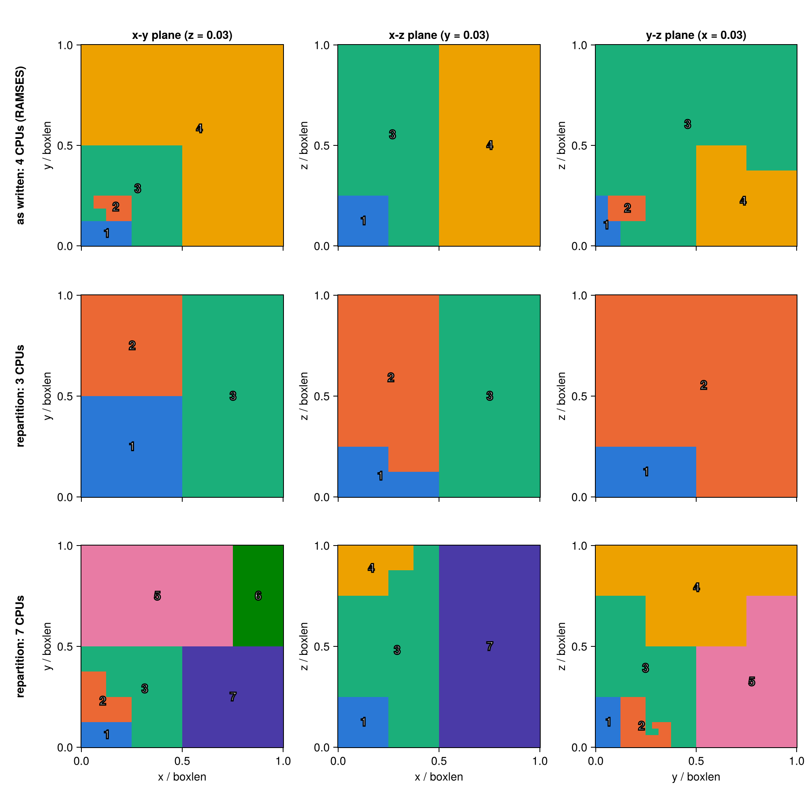
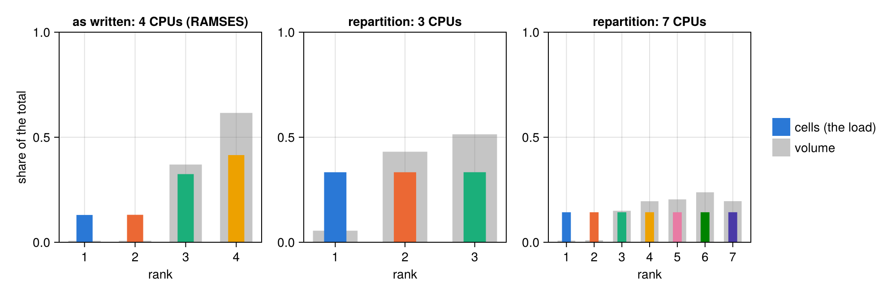
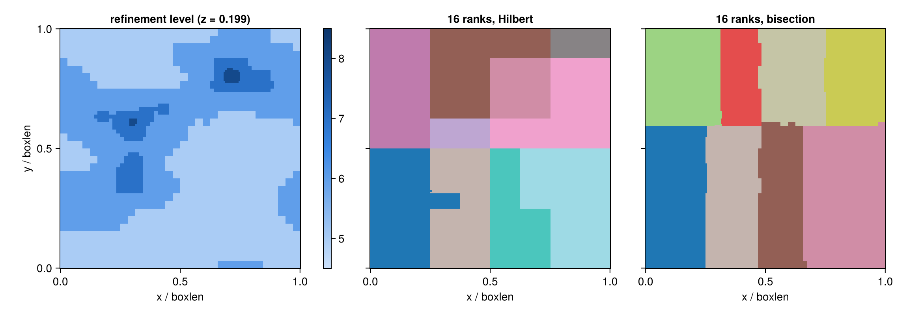
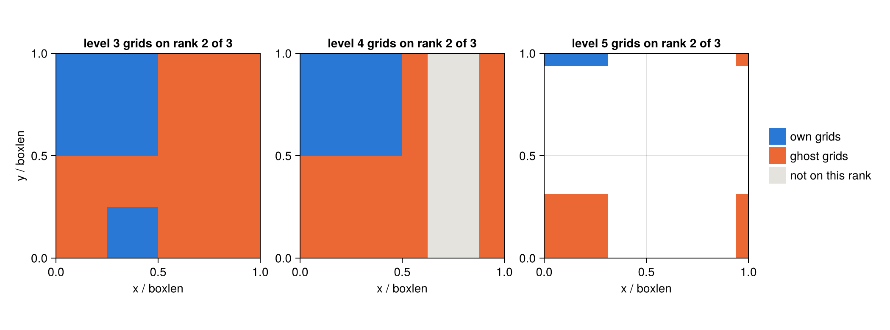
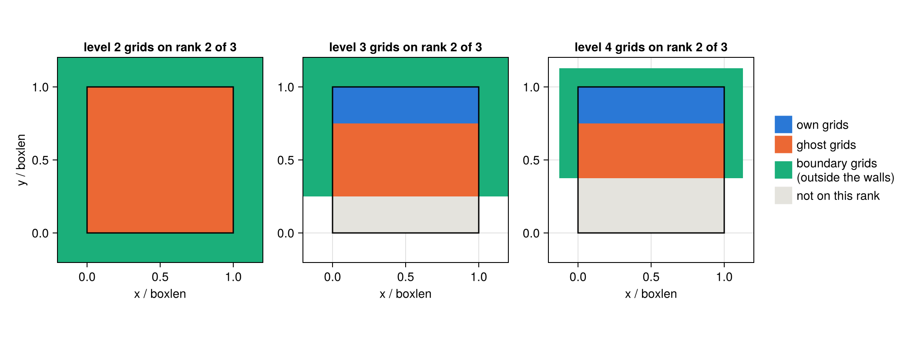
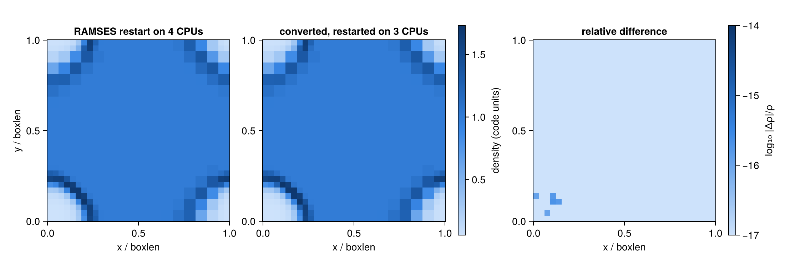
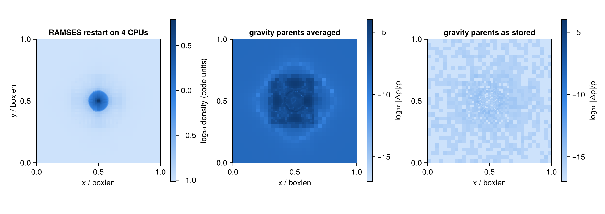
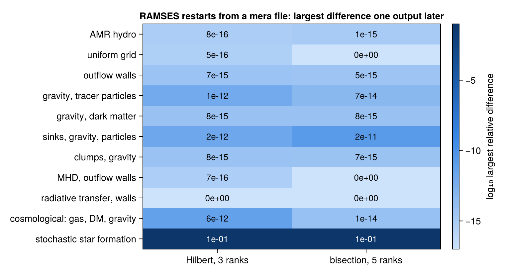
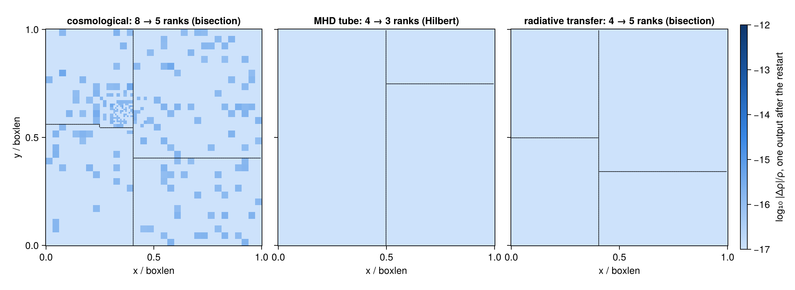

Restart RAMSES with any number of CPUs
This page is also an executable Jupyter notebook: open / download 07_2_multi_RAMSES_Restart.ipynb. The notebooks run end-to-end and double as part of Mera's test suite.
RAMSES writes one file per data type and MPI rank (amr_, hydro_, grav_, rt_, part_, ...), and it restarts only with the number of ranks that wrote them (section 1). Mera rewrites an output for any other number of ranks.
At a glance
If you have the RAMSES output. Rewrite it for the new number of ranks; every value is copied:
r = repartition(250, "/sims/run", 512; outpath="/sims/run_512") # output 250, written for 512 ranks
c = compareramses(250, "/sims/run", "/sims/run_512") # check: same octree, same values?Put r.ngridmax_needed and r.npart_max into the restart namelist as ngridmax and npartmax, then run mpirun -np 512 ramses3d run.nml 250 in /sims/run_512. How it works: sections 2 and 3.
If you only have a mera file. A mera file is Mera's compressed copy of an output in one file. It keeps every leaf cell, so writeramses can write new RAMSES files from it, also when the original output is deleted:
gas = loaddata(250, "/merafiles", :hydro) # load each data type from the mera file
grav = loaddata(250, "/merafiles", :gravity)
part = loaddata(250, "/merafiles", :particles)
ok, report = restart_completeness(gas; gravity=grav, particles=part) # nothing missing?
r = writeramses(512; hydro=gas, gravity=grav, particles=part, outpath="/sims/run_512") # written for 512 ranksData loaded with gethydro and the other readers works the same. Load the gravity with getgravity(info; parents=true) before saving, so that it continues exactly. How it works: section 8.
| function | what it does | more |
|---|---|---|
repartition | rewrites a RAMSES output for any number of ranks; every value copied | §3, §5 |
writeramses | writes a RAMSES output from complete Mera data; leaf cells copied, refined cells rebuilt as RAMSES builds them | §8 |
restart_completeness | checks that Mera data holds the whole box: every level, variable and particle | §8 |
getgravity(info; parents=true) | also loads the gravity of the refined cells, which RAMSES needs to continue exactly | §8 |
compareramses | compares two outputs written with any numbers of ranks: octree, every value, every particle | §5 |
upgrade_merafile | adds what a restart needs to a mera file saved before Mera 1.8.0 | §9 |
Both writers take ordering=:bisection and iogroupsize=n for runs that use them (§10).
What to expect. repartition: identical values. writeramses: identical leaf cells, particles and sinks; refined cells rebuilt. RAMSES then continues to round-off (1e-15 gas, up to 2e-11 gravity), as it does when it changes the rank count itself (§7, §11, §12). Large outputs: §13.
About this page
The page explains each step and then checks the result four ways:
- Same files as RAMSES (section 4): first, Mera must write RAMSES's files correctly. It takes an output RAMSES wrote on 4 ranks and writes it again for the same 4 ranks. Result: the files equal RAMSES's own, grid by grid and link by link. The same code writes the files for any other number of ranks.
- Same values (section 5): next, no number may change. The output is written for 1, 3, 7 and 8 ranks, and from 4 to 3 and back to 4 ranks. Result: every value is exactly the same as in the original.
- Same data in RAMSES (section 6): then RAMSES must read the new files correctly. RAMSES loads them and, before computing anything, writes out what it loaded. The same is done with the original files. Result: both are exactly the same (1 to 8 ranks, 104 of 104 tests). So RAMSES starts from exactly the right data.
- Same evolution (section 7): finally, RAMSES runs. It continues the simulation for 13 time steps, once from the new files on 3 ranks and once from its own files on 4 ranks. Result: the two runs agree to about 15 digits (largest relative difference
8e-16). The last digit may differ, because a restart or another number of ranks makes the computer round a little differently. RAMSES alone shows the same: restarted from its own files, it differs just as much (1e-15) from the same simulation run without a restart.
The notebook starts RAMSES itself, as mpirun -np <ranks> ramses3d run.nml <output> (helper run_ramses), so every restart on this page really runs. Only the validation-suite tables (sections 6 and 7) and the benchmark (section 13) are read from result files.
Supported: 3-D runs, uniform or AMR, cosmological or not; Hilbert or bisection ordering; plain files or IO groups; periodic, outflow, reflexive or imposed boundaries; hydro, MHD, RT, gravity, particles (also the legacy format), sinks and clumps. Not supported: the orderings 'planar' and 'angular', QUADHILBERT builds, 1-D and 2-D runs.
Setup
The simulations
Paths to the test runs and to the RAMSES builds used on this page. To run the page yourself, change them or set the environment variables. The two main runs, both written on 4 CPUs:
| name | run | used in |
|---|---|---|
SEDOV | Sedov blast, AMR levels 4 to 7, load-balanced | sections 1 to 7 and 10 |
DMGAS | gas, self-gravity and 30,000 dark-matter particles | sections 5, 7 and 8 |
The other runs (outflow walls, cosmological, MHD, RT, the public test simulations) are named where they are used.
Sources. All runs on this page were made with RAMSES (Teyssier 2002, A&A 385, 337). The 4-CPU runs were made for this page. The public test simulations of section 11 are Mera's test data (download_testdata()); where each comes from and what to cite (RT, sinks, MHD) is listed in testdata/NOTICE.md. The old-format cosmological run of section 10 is the yt project's sample output output_00080 (download).
# Two RAMSES test runs, both written on 4 CPUs, and the RAMSES build that made them.
# Point these at your own runs and build, or set the environment variables.
RUNS = get(ENV, "MERA_RAMSESRUNS", "/Volumes/FASTStorage/projects/RamsesConverter/testruns")
RAMSES = get(ENV, "MERA_RAMSES_BIN", "/Volumes/FASTStorage/projects/RamsesConverter/build/hydro/bin/ramses3d")
# the same RAMSES with ONE line disabled, so it can write its memory right after reading (section 6)
RAMSES_READBACK = get(ENV, "MERA_RAMSES_READBACK_BIN",
"/Volumes/FASTStorage/projects/RamsesConverter/build/readback-hydro/bin/ramses3d")
MPIRUN = get(ENV, "MERA_MPIRUN", "/opt/local/bin/mpirun")
# the result tables of the RAMSES validation suite (sections 6 and 7): RAMSES run on files written
# by Mera's converter (RamsesConverter/e2e, run with this Mera)
SUITE = get(ENV, "MERA_RAMSESSUITE", "/Volumes/FASTStorage/projects/RamsesConverter/e2e/results")
using Mera, CairoMakie, Printf, Statistics
CairoMakie.activate!(type="png")
const RW = Mera.RamsesWriter # the file-format machinery, used here only to look inside
SEDOV = joinpath(RUNS, "sedov3d_amr_lb_ncpu4") # AMR hydro, levels 4 to 7, load-balanced
DMGAS = joinpath(RUNS, "dm_gas3d_ncpu4") # gas + self-gravity + 30,000 DM particles
WORK = mktempdir() # every file this page writes goes here
info = getinfo(6, SEDOV, verbose=false)
println("sedov: ncpu = ", info.ncpu, ", levels ", info.levelmin, " to ", info.levelmax,
", ", info.grid_info.ngridmax, " grids max per rank")
println("dm_gas: ncpu = ", getinfo(4, DMGAS, verbose=false).ncpu, ", particles: ",
getinfo(4, DMGAS, verbose=false).part_info.Ndm)*__ __ _______ ______ _______
| |_| | | _ | | _ |
| | ___| | || | |_| |
| | |___| |_||_| |
| | ___| __ | |
| ||_|| | |___| | | | _ |
|_| |_|_______|___| |_|__| |__|
Mera v1.8.0 | Julia 1.12.7 | 8 threads
sedov: ncpu = 4, levels 4 to 7, 10000 grids max per rank
dm_gas: ncpu = 4, particles: 30000Helper functions
Small tools for this page, not part of Mera: start RAMSES with mpirun (run_ramses), write a restart namelist with enough memory per rank (restart_namelist), draw a slice through the octree (slice_map, density_slice), label the ranks in figures, and list the leaf cells (leaf_cells). They use Mera.RamsesWriter (RW) only to look inside the files.
# ── tools used below, no new Mera concepts ──
# Run RAMSES in `dir` from output `n` on `ncpu` ranks; true if it finished normally.
function run_ramses(dir, nml, n, ncpu; bin=RAMSES)
log = joinpath(dir, "run.log")
ok = success(pipeline(Cmd(`$MPIRUN -np $ncpu $bin $nml $n`; dir=dir); stdout=log, stderr=log))
return ok && occursin("Run completed", read(log, String))
end
# A restart namelist: the run's own, with the memory per rank set to what the new ranks need.
function restart_namelist(src, dst; ngridmax, npartmax=0, run_extra="", output_extra="")
txt = read(src, String)
txt = replace(txt, r"^\s*(ngridmax|ngridtot|npartmax|nparttot|nstepmax|foutput)\s*=.*$"mi => "")
txt = replace(txt, r"^&AMR_PARAMS\s*$"mi =>
"&AMR_PARAMS\nngridmax=$ngridmax" * (npartmax > 0 ? "\nnpartmax=$npartmax" : ""))
isempty(run_extra) || (txt = replace(txt, r"^&RUN_PARAMS\s*$"mi => "&RUN_PARAMS\n$run_extra"))
isempty(output_extra) || (txt = replace(txt, r"^&OUTPUT_PARAMS\s*$"mi => "&OUTPUT_PARAMS\n$output_extra"))
write(dst, txt)
end
# The value of the finest (leaf) cell under each pixel of an n×n slice. The slice is the plane
# perpendicular to box axis `axis` (1 = x, 2 = y, 3 = z) at `pos` (box units); the default is the
# x-y plane at height z = pos.
function slice_map(t, pos, n, value; axis=3)
img = fill(NaN, n, n)
for i in 1:n, j in 1:n
u, v = (i - 0.5) / n, (j - 0.5) / n
x = axis == 3 ? (u, v, pos) : axis == 2 ? (u, pos, v) : (pos, u, v)
g = RW.find_grid(t, 1, RW.Coord((0, 0, 0))); l = 1
while true
c = ntuple(d -> floor(Int, x[d] * 2^l), 3)
child = RW.find_grid(t, l + 1, RW.Coord(c))
if child == 0
img[i, j] = value(l, g, RW.cell_index((c .& 1)...)); break
end
g, l = child, l + 1
end
end
img
end
function density_slice(dir, iout, z, n)
t = RW.read_global_tree(dir, iout; verbose=false)
cs = RW.open_cell_files(dir, "hydro", iout, t.header.ncpu, t.header.nlevelmax, 0)
slice_map(t, z, n, (l, g, ind) -> RW.cell_value(cs, t.src_cpu[l][g], l, t.src_cpu[l][g],
t.src_pos[l][g], ind, 1))
end
const CPU_COLORS = ["#2a78d6", "#eb6834", "#1baf7a", "#eda100", "#e87ba4", "#008300", "#4a3aa7", "#e34948"]
blues = cgrad(["#cde2fb", "#86b6ef", "#3987e5", "#1c5cab", "#0d366b"]) # one sequential scale for every map
function label_ranks!(ax, img, n)
for r in 1:maximum(filter(!isnan, img))
idx = findall(==(r), img); isempty(idx) && continue
cx = sum(first(Tuple(I)) for I in idx) / length(idx) / n
cy = sum(last(Tuple(I)) for I in idx) / length(idx) / n
text!(ax, cx, cy; text=string(Int(r)), align=(:center, :center), color=:white,
fontsize=15, font=:bold, strokecolor=:black, strokewidth=1.5)
end
end
ok_mark(b) = b ? "yes" : "NO"
# Every leaf cell: level, grid, cell index, centre (box units) and size.
function leaf_cells(t)
out = NamedTuple[]
for l in 1:RW.nlevels(t), (g, ig) in enumerate(t.levels[l].ig), ind in 1:8
RW.is_refined(t, l, ig, ind) && continue
o = RW.cell_offset(ind)
c = (2ig[1] + o[1], 2ig[2] + o[2], 2ig[3] + o[3])
push!(out, (l=l, g=g, ind=ind, x=(c .+ 0.5) ./ 2^l, dx=1 / 2^l))
end
out
end
# Which grids rank k holds under each pixel of a slice at height z (box units) on level lev:
# 0 not on the rank, 1 own, 2 ghost, 3 boundary grid (outside a wall).
function rank_grid_map(t, dec, lt, k, lev, z, xs)
held, bnd = Set(lt.grids[lev]), Set(lt.bgrids[lev])
c0 = t.geom.cmin # where the box starts in the coarse grid
img = fill(NaN, length(xs), length(xs))
for (i, x) in enumerate(xs), (j, y) in enumerate(xs)
ig = RW.Coord(floor.(Int, ((x, y, z) .+ c0) .* 2^(lev - 1)))
if ig in bnd
img[i, j] = 3.0
else
g = RW.find_grid(t, lev, ig); g == 0 && continue
img[i, j] = g in held ? (RW.grid_owner(t, dec, lev, g) == k ? 1.0 : 2.0) : 0.0
end
end
img
end
# The grids rank k holds on each of `levels`, side by side, in box units; `walls` draws the box.
function rank_grids_figure(t, dec, k, levels; z, xs=((1:256) .- 0.5) ./ 256, walls=false)
lt = RW.build_local_tree(t, dec, k)
colors = ["#e4e3dd", CPU_COLORS[1], CPU_COLORS[2], CPU_COLORS[3]]
fig = Figure(size=(1050, 390))
for (col, lev) in enumerate(levels)
ax = Axis(fig[1, col]; aspect=DataAspect(), title="level $lev grids on rank $k of $(dec.ncpu)",
xlabel="x / boxlen", ylabel = col == 1 ? "y / boxlen" : "")
heatmap!(ax, xs, xs, rank_grid_map(t, dec, lt, k, lev, z, xs);
colormap=cgrad(colors; categorical=true), colorrange=(-0.5, 3.5))
walls && lines!(ax, [0, 1, 1, 0, 0], [0, 0, 1, 1, 0]; color=:black, linewidth=1.5)
end
shown = walls ? [2, 3, 4, 1] : [2, 3, 1]
labels = Dict(2 => "own grids", 3 => "ghost grids", 4 => "boundary grids\n(outside the walls)", 1 => "not on this rank")
Legend(fig[1, length(levels) + 1], [PolyElement(color=colors[c]) for c in shown], [labels[c] for c in shown];
framevisible=false)
fig
end
# How many own, ghost and boundary grids rank k holds.
function grid_counts(t, dec, k)
lt = RW.build_local_tree(t, dec, k)
own = sum(lt.numbl[k, :])
return (own=own, ghost=sum(lt.numbl) - own, boundary=sum(lt.numbb))
end;1. Why this is needed
Each rank reads its own files (amr_*.outXXXXX, hydro_*.outXXXXX, ...). On another number of ranks RAMSES stops before the first step. The 4-CPU output, restarted on 3 ranks:
d = mkpath(joinpath(WORK, "wrong_ncpu"))
cp(joinpath(SEDOV, "output_00006"), joinpath(d, "output_00006"))
cp(joinpath(SEDOV, "sedov3d_amr_lb.nml"), joinpath(d, "run.nml"))
println("RAMSES finished: ", run_ramses(d, "run.nml", 6, 3))
foreach(println, filter(l -> occursin(r"ncpu|compatible"i, l), readlines(joinpath(d, "run.log"))))RAMSES finished: false
Number of processes not compatible
ncpu should be set equal to 42. How RAMSES splits a run over CPUs
RAMSES orders all cells along a Hilbert curve, a line through every cell that keeps neighbours close. It cuts the curve into one piece per rank, each with about the same work. A rank's piece is its domain.
Each rank also keeps copies of the cells next to its border, the ghost zone, because the solver needs them. The files store exactly what each rank holds: its own grids, ghost grids and boundary grids, linked by pointers. So a new number of ranks changes every file.
The figures use the Sedov blast in the corner of a periodic box. The first figure cuts three planes through the blast, just inside the box faces. Top row: RAMSES's split on 4 CPUs. Other rows: repartition for 3 and 7 CPUs. Domains are small near the blast, because a domain holds a share of the cells, not of the volume.
t = RW.read_global_tree(joinpath(SEDOV, "output_00006"), 6; verbose=false)
n, z = 256, 0.03 # 0.03: just inside the box faces that meet at the blast
decs = [(4, "as written: 4 CPUs (RAMSES)", RW.decompose(t, 4; bound_key=copy(t.header.bound_key))),
(3, "repartition: 3 CPUs", RW.decompose(t, 3)),
(7, "repartition: 7 CPUs", RW.decompose(t, 7))]
planes = [(3, "x-y plane (z = 0.03)", "x", "y"), (2, "x-z plane (y = 0.03)", "x", "z"),
(1, "y-z plane (x = 0.03)", "y", "z")]
fig = Figure(size=(1000, 1000))
for (row, (ncpu, name, dec)) in enumerate(decs), (col, (axis, pname, xl, yl)) in enumerate(planes)
img = slice_map(t, z, n, (l, g, ind) -> Float64(dec.cpu_map[l][g, ind]); axis=axis)
ax = Axis(fig[row, col]; aspect=DataAspect(), title = row == 1 ? pname : "",
xlabel = row == 3 ? "$xl / boxlen" : "", ylabel = "$yl / boxlen",
xticklabelsvisible = row == 3)
heatmap!(ax, range(0, 1; length=n), range(0, 1; length=n), img;
colormap=cgrad(CPU_COLORS[1:ncpu]; categorical=true), colorrange=(0.5, ncpu + 0.5))
label_ranks!(ax, img, n)
col == 1 && Label(fig[row, 0], name; rotation=π/2, font=:bold, tellheight=false)
end
fig
# The load behind those shapes: cells owned per rank, counted on every level (the unit RAMSES and
# repartition balance), and each rank's share of the box VOLUME, measured on its leaf cells.
leaves = leaf_cells(t)
fig = Figure(size=(1000, 330))
for (col, (ncpu, name, dec)) in enumerate(decs)
cells = [sum(count(==(k), dec.cpu_map[l]) for l in 1:RW.nlevels(t)) for k in 1:ncpu]
volume = [sum(c.dx^3 for c in leaves if dec.cpu_map[c.l][c.g, c.ind] == k; init=0.0) for k in 1:ncpu]
ax = Axis(fig[1, col]; title=name, xlabel="rank", ylabel = col == 1 ? "share of the total" : "",
xticks=1:ncpu, limits=(nothing, (0, 1)))
barplot!(ax, 1:ncpu, volume; width=0.8, color=(:gray, 0.45)) # wide, behind
barplot!(ax, 1:ncpu, cells ./ sum(cells); width=0.4, color=CPU_COLORS[1:ncpu]) # narrow, in front
@printf("%-28s cells per rank %s (max/min %.3f)\n", name, string(cells), maximum(cells) / minimum(cells))
end
Legend(fig[1, 4], [PolyElement(color=CPU_COLORS[1]), PolyElement(color=(:gray, 0.45))],
["cells (the load)", "volume"]; framevisible=false)
figas written: 4 CPUs (RAMSES) cells per rank [1050, 1056, 2621, 3353] (max/min 3.193)
repartition: 3 CPUs cells per rank [2693, 2693, 2694] (max/min 1.000)
repartition: 7 CPUs cells per rank [1154, 1154, 1154, 1155, 1154, 1154, 1155] (max/min 1.001)
Narrow coloured bars, cells: after repartition every rank holds the same number of cells, to within one. RAMSES's own split is uneven (1,050 to 3,353 cells): it rebalances only every nremap steps, with its own cost function, and will rebalance the converted run the same way. Wide grey bars, volume: the volume per rank differs a lot.
The cosmological test run at a = 0.2, split for 16 ranks in both orderings Mera writes (section 10). Left: the refinement level in a slice through the finest cells. Middle: Hilbert domains, pieces of one curve that interlock. Right: bisection domains, boxes cut along x, y and z in turn. Domains are small where the cells are fine:
COSMO3D = joinpath(RUNS, "cosmo3d_ncpu8") # the cosmological test run, 8 CPUs, AMR levels 5 to 8
tc = RW.read_global_tree(joinpath(COSMO3D, "output_00004"), 4; verbose=false) # a = 0.2
dh, db = RW.new_decomposition(tc, 16; ordering=:hilbert), RW.new_decomposition(tc, 16; ordering=:bisection)
# the slice goes through the finest cells: the middle of the deepest level's grids
deep = tc.levels[end].ig
zc = (sort([Int(g[3]) for g in deep])[cld(length(deep), 2)] + 0.5) / 2.0^(RW.nlevels(tc) - 1)
lev = slice_map(tc, zc, n, (l, g, ind) -> Float64(l))
rk(dec) = slice_map(tc, zc, n, (l, g, ind) -> Float64(dec.cpu_map[l][g, ind]))
fig = Figure(size=(1150, 400))
ax = Axis(fig[1, 1]; aspect=DataAspect(), title=@sprintf("refinement level (z = %.3f)", zc), xlabel="x / boxlen", ylabel="y / boxlen")
hm = heatmap!(ax, range(0, 1; length=n), range(0, 1; length=n), lev; colormap=blues, colorrange=(4.5, 8.5))
Colorbar(fig[1, 2], hm; ticks=5:8, width=10)
for (col, (dec, name)) in enumerate(((dh, "16 ranks, Hilbert"), (db, "16 ranks, bisection")))
ax = Axis(fig[1, col + 2]; aspect=DataAspect(), title=name, xlabel="x / boxlen", yticklabelsvisible=false)
heatmap!(ax, range(0, 1; length=n), range(0, 1; length=n), rk(dec);
colormap=cgrad(:tab20, 16; categorical=true), colorrange=(0.5, 16.5))
cells = [sum(count(==(k), dec.cpu_map[l]) for l in 1:RW.nlevels(tc)) for k in 1:16]
@printf("%-20s cells per rank %d to %d\n", name, minimum(cells), maximum(cells))
end
fig16 ranks, Hilbert cells per rank 11871 to 11872
16 ranks, bisection cells per rank 11278 to 12363
# The grids rank 2 of 3 holds on levels 3, 4 and 5: its own and the ghost grids around them.
# The slice is the x-y plane at z = 0.03, just inside the bottom face, through the blast.
dec3 = RW.decompose(t, 3)
rank_grids_figure(t, dec3, 2, (3, 4, 5); z=0.03)
A slice at z = 0.03, through the blast. Blue: the grids rank 2 owns. Orange: ghost grids, copies of its neighbours' grids next to its border, because the solver needs the neighbouring values. The ghost layer is one grid wide. On these coarse levels one grid is a large part of the box (a quarter of it at level 3), so the ghosts cover much of it; each finer level halves the layer. The box is periodic, so the layer continues across the faces: the orange strip at the right edge of the level-4 panel borders rank 2's cells at the left edge. White: not refined there.
Walls
Many runs have walls instead of a periodic box: gas flows out (outflow), bounces back (reflexive) or flows in with fixed values (imposed). The solver also needs cells beyond a wall, so RAMSES keeps a layer of boundary grids just outside each wall, filled from the cells just inside. These grids are stored in the files, so repartition must build them for every new rank; check 1 (section 4) tests them. The example is the Sedov run with outflow walls on all six faces, split over 3 ranks. How many grids each rank holds:
OUTFLOW = joinpath(RUNS, "sedov3d_outflow_ncpu4") # Sedov run, outflow walls on all six faces
to = RW.read_global_tree(joinpath(OUTFLOW, "output_00004"), 4; verbose=false)
deco = RW.decompose(to, 3)
println("rank own grids ghost grids boundary grids")
for k in 1:3
g = grid_counts(to, deco, k)
@printf("%-5d %-10d %-12d %d\n", k, g.own, g.ghost, g.boundary)
endrank own grids ghost grids boundary grids
1 32539 2998 3246
2 32538 3190 3194
3 32540 2997 3246# Rank 2 around the box, levels 2 to 4, in the x-y plane through the box centre (z = 0.5)
rank_grids_figure(to, deco, 2, (2, 3, 4); z=0.5, xs=range(-0.2, 1.2; length=280), walls=true)
The black square is the box. Green: the boundary grids rank 2 holds, outside the walls next to its own and ghost grids. On level 2 one grid is half the box, so rank 2 holds every grid there as a ghost. On finer levels it owns the top of the box (blue), and the green layer gets thinner, since each grid is half as wide. White: no grid there. Ghosts are about 9 % of a rank's grids here, because most grids are on finer levels.
3. repartition: what it does, step by step
| step | what | how | why |
|---|---|---|---|
| 1 | read the global octree | every old amr_* file | the new split needs the whole tree |
| 2 | new domains | Hilbert curve cut into ncpu pieces of equal work (cells, plus particles with balance_particles=true) | equal load; no rank exceeds npartmax |
| 3 | each rank's octree | own + ghost + boundary grids, with every pointer | this is what RAMSES loads |
| 4 | cell files | hydro_*, grav_*, rt_* values copied bit for bit | nothing is recomputed |
| 5 | particles and text files | each particle to the rank of its cell; clump rows re-dealt; info_*.txt gets the new domains; other files copied | the rest of the output |
rep = repartition(6, SEDOV, 3; outpath=joinpath(WORK, "sedov_3cpu"));[1/5] reading the octree of output_00006
reading amr file 4 / 4
1010 grids on 7 levels, ncpu = 4, periodic box, nexpand_bound = 1
[2/5] hilbert decomposition for 3 ranks
[3/5] building the local octree of every rank
[4/5] writing amr / hydro / grav / rt files
[5/5] particles, clump tables and text files
RAMSES output repartitioned: ncpu 4 → 3
from : /Volumes/FASTStorage/projects/RamsesConverter/testruns/sedov3d_amr_lb_ncpu4/output_00006
to : /var/folders/k5/gw4hqgwj5_qf8sljz0091x1m0000gp/T/jl_KQM620/sedov_3cpu/output_00006
own grids per rank : min 335, max 338
grids in memory per rank: min 592, max 673 (own + ghost + boundary)
restart namelist needs : ngridmax ≥ 674
14 files written in 0.7 sThe report's last line goes into the restart namelist: ngridmax (and npartmax) per rank. Fewer ranks need more per rank.
4. Check 1: same files as RAMSES
This check changes nothing: same output, same 4 ranks, same domain walls as RAMSES. Mera writes the four amr files (one per rank) again with its own writer and compares them with the files RAMSES wrote. If they match, the writer builds each rank's tree (own grids, ghosts, pointers) exactly as RAMSES does, and the same code then builds the files for other rank counts.
Grids are matched by level and position, pointers by what they point to, so a different numbering does not count as a difference. Grids, ghosts, boundary grids, pointers and the counts per level must all match.
# Every grid named by (level, list, position); every pointer by the position it points to.
function canonical_amr(path)
h, lists = RW.read_amr_file(path)
L = Int(h.nlevelmax); ncoarse = Int(h.nx * h.ny * h.nz); ngm = Int(h.ngridmax)
where = Dict{Int32,Tuple{Int,RW.Coord}}()
for l in 1:L, g in lists[l], i in 1:RW.ngrids(g)
where[g.ind_grid[i]] = (l, RW.grid_coord(view(g.xg, i, :), l))
end
cellc(p) = p == 0 ? nothing : p <= ncoarse ? (0, p) :
(ind = (p - ncoarse - 1) ÷ ngm + 1; ig = p - ncoarse - (ind - 1) * ngm;
haskey(where, ig) ? (where[ig]..., ind) : (:dangling, ig))
gridc(p) = p == 0 ? nothing : get(where, p, (:dangling, p))
out = Dict(f => Set() for f in (:grids, :father, :nbor, :son, :cpu_map))
for l in 1:L, (ib, g) in enumerate(lists[l]), i in 1:RW.ngrids(g)
key = (l, ib, RW.grid_coord(view(g.xg, i, :), l))
push!(out[:grids], key)
push!(out[:father], (key, cellc(g.father[i])))
push!(out[:nbor], (key, Tuple(cellc(x) for x in g.nbor[i, :])))
push!(out[:son], (key, Tuple(gridc(x) for x in g.son[i, :])))
push!(out[:cpu_map], (key, Tuple(g.cpu_map[i, :])))
end
out
end
src = joinpath(SEDOV, "output_00006")
dec4 = RW.decompose(t, 4; bound_key=copy(t.header.bound_key))
nexp = RW.detect_nexpand_bound(src)
lts = [RW.build_local_tree(t, dec4, k; nexpand_bound=nexp) for k in 1:4]
nt = RW.global_numbtot([l.numbl for l in lts], t.header.nlevelmax)
umt = maximum(RW.ngrid_current, lts)
println(rpad("rank", 6), rpad("grids", 8), rpad("grids", 8), rpad("fathers", 9), rpad("neighbours", 12),
rpad("children", 10), "owners")
for k in 1:4
tmp = tempname()
RW.write_amr_file(tmp, RW.amr_file_content(t, dec4, lts[k], Int(t.header.ngridmax), nt, umt)...)
a, b = canonical_amr(RW.amr_filename(src, 6, k)), canonical_amr(tmp)
println(rpad(k, 6), rpad(length(a[:grids]), 8), rpad(ok_mark(a[:grids] == b[:grids]), 8),
rpad(ok_mark(a[:father] == b[:father]), 9), rpad(ok_mark(a[:nbor] == b[:nbor]), 12),
rpad(ok_mark(a[:son] == b[:son]), 10), ok_mark(a[:cpu_map] == b[:cpu_map]))
rm(tmp)
endrank grids grids fathers neighbours children owners
1 383 yes yes yes yes yes
2 468 yes yes yes yes yes
3 752 yes yes yes yes yes
4 705 yes yes yes yes yesThe same on the run with outflow walls, boundary grids included:
srco = joinpath(OUTFLOW, "output_00004")
dec4o = RW.decompose(to, 4; bound_key=copy(to.header.bound_key))
lto4 = [RW.build_local_tree(to, dec4o, k; nexpand_bound=RW.detect_nexpand_bound(srco)) for k in 1:4]
nto = RW.global_numbtot([l.numbl for l in lto4], to.header.nlevelmax)
umto = maximum(RW.ngrid_current, lto4)
println(rpad("rank", 6), rpad("grids", 8), rpad("boundary", 10), rpad("grids", 8), rpad("fathers", 9),
rpad("neighbours", 12), rpad("children", 10), "owners")
for k in 1:4
tmp = tempname()
RW.write_amr_file(tmp, RW.amr_file_content(to, dec4o, lto4[k], Int(to.header.ngridmax), nto, umto)...)
a, b = canonical_amr(RW.amr_filename(srco, 4, k)), canonical_amr(tmp)
nb = count(key -> key[2] > 4, a[:grids]) # lists beyond the 4 CPU lists: walls
println(rpad(k, 6), rpad(length(a[:grids]), 8), rpad(nb, 10), rpad(ok_mark(a[:grids] == b[:grids]), 8),
rpad(ok_mark(a[:father] == b[:father]), 9), rpad(ok_mark(a[:nbor] == b[:nbor]), 12),
rpad(ok_mark(a[:son] == b[:son]), 10), ok_mark(a[:cpu_map] == b[:cpu_map]))
rm(tmp)
endrank grids boundary grids fathers neighbours children owners
1 29097 2490 yes yes yes yes yes
2 29097 2490 yes yes yes yes yes
3 29097 2490 yes yes yes yes yes
4 29027 2450 yes yes yes yes yesEvery rank is rebuilt exactly. The same holds for every run of the RAMSES validation suite, a 16-level cosmological run on 16 CPUs and a galaxy run on 640 CPUs. New splits come from the same code, so they are what RAMSES would write.
5. Check 2: same values
compareramses compares two outputs with any rank counts: the octree, every hydro, gravity and RT value (relative to the variable's largest value) and every particle, matched by identity. A conversion, and a round trip, must give exactly zero:
println(rpad("conversion", 22), rpad("same octree", 13), rpad("max |Δ| hydro", 15), "particles, max |Δx|")
for (label, a, b, ncpu) in (("4 → 1", SEDOV, nothing, 1), ("4 → 3", SEDOV, nothing, 3),
("4 → 7", SEDOV, nothing, 7), ("4 → 8", SEDOV, nothing, 8),
("dm_gas 4 → 7", DMGAS, nothing, 7))
o = a == DMGAS ? 4 : 6
out = joinpath(WORK, "check2_" * replace(label, r"\W+" => "_"))
repartition(o, a, ncpu; outpath=out, verbose=false)
c = compareramses(o, a, out)
println(rpad(label, 22), rpad(ok_mark(c.same_tree), 13), rpad(@sprintf("%.1e", maximum(c.maxdiff["hydro"])), 15),
c.nparticles[1], ", ", @sprintf("%.1e", c.particle_maxdiff[1]))
end
# and back: 4 → 3 → 4 must be the original, file by file in content
repartition(6, joinpath(WORK, "sedov_3cpu"), 4; outpath=joinpath(WORK, "sedov_back"), verbose=false)
c = compareramses(6, SEDOV, joinpath(WORK, "sedov_back"))
println(rpad("4 → 3 → 4", 22), rpad(ok_mark(c.same_tree), 13), @sprintf("%.1e", maximum(c.maxdiff["hydro"])))conversion same octree max |Δ| hydro particles, max |Δx|
4 → 1 yes 0.0e+00 0, 0.0e+00
4 → 3 yes 0.0e+00 0, 0.0e+00
4 → 7 yes 0.0e+00 0, 0.0e+00
4 → 8 yes 0.0e+00 0, 0.0e+00
dm_gas 4 → 7 yes 0.0e+00 30000, 0.0e+00
4 → 3 → 4 yes 0.0e+00All zero: the values are copied, never recomputed.
6. Check 3: same data in RAMSES
RAMSES rebuilds ghost zones and communication tables when it reads files, so a wrong pointer would show only there. The test: RAMSES reads the files and writes its memory out before any step, once from the converted files and once from the originals on 4 ranks. The two dumps are compared.
RAMSES has no switch for this: after a restart it refuses to write before its first step (one test in amr/output_amr.f90). The dumps come from a RAMSES build with that one line disabled, run with nstepmax one step ahead and foutput=1.
# nstep_coarse of the restart output: nstepmax one ahead makes RAMSES stop after that dump
nstep = Int(RW.read_amr_file(RW.amr_filename(joinpath(SEDOV, "output_00006"), 6, 1))[1].nstep_coarse)
function readback_dump(src_run, ncpu, name; ngridmax=20_000)
d = mkpath(joinpath(WORK, name))
isdir(joinpath(d, "output_00006")) || cp(joinpath(src_run, "output_00006"), joinpath(d, "output_00006"))
restart_namelist(joinpath(SEDOV, "sedov3d_amr_lb.nml"), joinpath(d, "run.nml"); ngridmax=ngridmax,
run_extra="nstepmax=$(nstep + 1)", output_extra="foutput=1")
ok = run_ramses(d, "run.nml", 6, ncpu; bin=RAMSES_READBACK)
return ok ? joinpath(d, "output_00007") : nothing
end
ref = readback_dump(SEDOV, 4, "readback_original_4cpu") # original files, 4 ranks
println(rpad("ranks", 8), rpad("same time", 11), rpad("same octree", 13), "every value identical")
for ncpu in (1, 3, 7, 8)
conv = joinpath(WORK, "readback_conv_$(ncpu)cpu")
r = repartition(6, SEDOV, ncpu; outpath=conv, overwrite=true, verbose=false)
dump = readback_dump(conv, ncpu, "readback_conv_$(ncpu)cpu"; ngridmax=max(20_000, 2 * r.ngridmax_needed))
same_time = readlines(joinpath(ref, "info_00007.txt"))[[6, 9]] == readlines(joinpath(dump, "info_00007.txt"))[[6, 9]] # nstep_coarse, time
c = compareramses(7, dirname(ref), dirname(dump))
println(rpad(ncpu, 8), rpad(ok_mark(same_time), 11), rpad(ok_mark(c.same_tree), 13),
ok_mark(all(v -> all(iszero, v), values(c.maxdiff))))
endranks same time same octree every value identical
1 yes yes yes
3 yes yes yes
7 yes yes yes
8 yes yes yesIdentical, bit for bit, for every rank count. The RAMSES validation suite ran the same test on all 13 kinds of run (particles, sinks, MHD, RT) on 1 to 8 ranks, particle and sink records included:
# the suite's result file: one header line, then one run per line
function readsuite(file)
lines = readlines(joinpath(SUITE, file))
hdr = split(lines[1], ',')
parsecell(s) = (s = strip(s, '"'); s == "true" ? true : s == "false" ? false :
something(tryparse(Float64, s), s))
[Dict(zip(hdr, parsecell.(split(l, ',')))) for l in lines[2:end]]
end
fmt(x) = x isa Number && !isnan(x) ? @sprintf("%.0e", x) : "–"
rb = readsuite("readback.csv")
println(rpad("run", 26), "ranks 1 to 8: bit-identical dump")
for run in unique(r["run"] for r in rb)
rs = [r for r in rb if r["run"] == run]
println(rpad(run, 26), join((r["bit_identical"] ? "✔" : "✘" for r in sort(rs; by=r -> r["ncpu"])), " "))
end
println("\n", count(r -> r["bit_identical"], rb), " of ", length(rb), " dumps bit-identical")run ranks 1 to 8: bit-identical dump
sedov3d_amr_lb_ncpu4 ✔ ✔ ✔ ✔ ✔ ✔ ✔ ✔
sedov3d_amr_lb_ncpu8 ✔ ✔ ✔ ✔ ✔ ✔ ✔ ✔
sedov3d_amr_ncpu1 ✔ ✔ ✔ ✔ ✔ ✔ ✔ ✔
sedov3d_amr_ncpu3 ✔ ✔ ✔ ✔ ✔ ✔ ✔ ✔
sedov3d_uniform_ncpu4 ✔ ✔ ✔ ✔ ✔ ✔ ✔ ✔
sedov3d_outflow_ncpu4 ✔ ✔ ✔ ✔ ✔ ✔ ✔ ✔
dm_gas3d_ncpu4 ✔ ✔ ✔ ✔ ✔ ✔ ✔ ✔
sedov3d_grav_part_ncpu4 ✔ ✔ ✔ ✔ ✔ ✔ ✔ ✔
starform3d_ncpu4 ✔ ✔ ✔ ✔ ✔ ✔ ✔ ✔
sinks3d_ncpu4 ✔ ✔ ✔ ✔ ✔ ✔ ✔ ✔
clumps3d_ncpu4 ✔ ✔ ✔ ✔ ✔ ✔ ✔ ✔
mhdtube3d_ncpu4 ✔ ✔ ✔ ✔ ✔ ✔ ✔ ✔
stromgren3d_ncpu4 ✔ ✔ ✔ ✔ ✔ ✔ ✔ ✔
104 of 104 dumps bit-identical7. Check 4: same evolution
Two runs from output 6: RAMSES's own restart on 4 ranks, and the converted files on 3 ranks. Both run to output 7 (13 steps) and are compared there. Had RAMSES read anything wrong, they would drift apart.
They cannot agree to the last digit, for two reasons inside RAMSES:
- Order of additions. RAMSES adds up numbers from all ranks, for example to find the time step and in the gravity solver. On 3 ranks it adds them in another order than on 4, and in computer arithmetic the order can change the last digit.
- Conversion on reading. The files store velocity and pressure, but RAMSES computes with momentum and energy. When it reads a restart, it converts back, and that can change the last digit too.
The end of this section shows how large these differences are when RAMSES restarts itself, without Mera.
# the converted output, in its own run directory, with a namelist sized for 3 ranks
run3 = joinpath(WORK, "sedov_3cpu")
restart_namelist(joinpath(SEDOV, "sedov3d_amr_lb.nml"), joinpath(run3, "run.nml");
ngridmax=max(20_000, round(Int, 1.3 * rep.ngridmax_needed)))
println("RAMSES on 3 ranks finished: ", run_ramses(run3, "run.nml", 6, 3))
native = joinpath(RUNS, "sedov3d_amr_lb_ncpu4_restart") # RAMSES's own restart on 4 ranks
c = compareramses(7, native, run3)
println("same octree after one output: ", c.same_tree)
println(@sprintf("largest difference, every hydro variable: %.1e", maximum(c.maxdiff["hydro"])))RAMSES on 3 ranks finished: true
same octree after one output: true
largest difference, every hydro variable: 7.6e-16ρn = density_slice(joinpath(native, "output_00007"), 7, z, n)
ρc = density_slice(joinpath(run3, "output_00007"), 7, z, n)
rel = abs.(ρc .- ρn) ./ abs.(ρn)
fig = Figure(size=(1100, 390))
for (col, (img, ttl)) in enumerate(((ρn, "RAMSES restart on 4 CPUs"), (ρc, "converted, restarted on 3 CPUs")))
ax = Axis(fig[1, col]; aspect=DataAspect(), title=ttl, xlabel="x / boxlen", ylabel=col == 1 ? "y / boxlen" : "")
hm = heatmap!(ax, range(0, 1; length=n), range(0, 1; length=n), img; colormap=blues, colorrange=extrema(ρn))
col == 2 && Colorbar(fig[1, 3], hm; label="density (code units)", width=10)
end
ax = Axis(fig[1, 4]; aspect=DataAspect(), title="relative difference", xlabel="x / boxlen")
hm = heatmap!(ax, range(0, 1; length=n), range(0, 1; length=n), log10.(max.(rel, 1e-17));
colormap=blues, colorrange=(-17, -14))
Colorbar(fig[1, 5], hm; label="log₁₀ |Δρ|/ρ", width=10)
fig
Machine precision everywhere: RAMSES cannot tell the converted files from its own. Particles are a stricter test, because gravity couples each particle to all the mass. The run with 30,000 dark-matter particles, converted to 7 ranks:
run7 = joinpath(WORK, "check2_dm_gas_4_7")
r7 = repartition(4, DMGAS, 7; outpath=run7, overwrite=true, verbose=false)
restart_namelist(joinpath(DMGAS, "dm_gas3d.nml"), joinpath(run7, "run.nml");
ngridmax=max(20_000, round(Int, 1.3 * r7.ngridmax_needed)),
npartmax=max(200_000, 3 * r7.npart_max))
println("RAMSES on 7 ranks finished: ", run_ramses(run7, "run.nml", 4, 7))
c = compareramses(5, joinpath(RUNS, "dm_gas3d_ncpu4_restart"), run7)
println("same octree: ", c.same_tree, ", particles matched by identity: ", c.nmatched)
println(@sprintf("largest difference: hydro %.1e, gravity %.1e, particle position %.1e boxlen",
maximum(c.maxdiff["hydro"]), maximum(c.maxdiff["grav"]), c.particle_maxdiff[1]))RAMSES on 7 ranks finished: true
same octree: true, particles matched by identity: 30000
largest difference: hydro 8.5e-15, gravity 1.2e-14, particle position 5.6e-16 boxlenRAMSES alone, for comparison: the Sedov run on 4 and on 8 CPUs from the start, and a restart on its own 4 CPUs against the same run computed straight through, without a restart:
floorcmp = [("RAMSES from t = 0 on 4 vs 8 CPUs, output 7",
compareramses(7, SEDOV, joinpath(RUNS, "sedov3d_amr_lb_ncpu8"))),
("RAMSES uninterrupted vs restarted, both on 4 CPUs",
compareramses(7, SEDOV, joinpath(RUNS, "sedov3d_amr_lb_ncpu4_restart"))),
("converted to 3 CPUs, restarted, vs RAMSES restart on 4",
compareramses(7, joinpath(RUNS, "sedov3d_amr_lb_ncpu4_restart"), run3))]
println(rpad("comparison", 58), rpad("octree", 8), "largest hydro difference")
for (name, c) in floorcmp
println(rpad(name, 58), rpad(c.same_tree ? "same" : "DIFF", 8), @sprintf("%.1e", maximum(c.maxdiff["hydro"])))
endcomparison octree largest hydro difference
RAMSES from t = 0 on 4 vs 8 CPUs, output 7 same 1.5e-15
RAMSES uninterrupted vs restarted, both on 4 CPUs same 1.1e-15
converted to 3 CPUs, restarted, vs RAMSES restart on 4 same 7.6e-16The RAMSES validation suite, every kind of run. The reference is RAMSES's own restart, or the run computed straight through, without a restart:
println(rpad("run", 28), rpad("CPUs", 8), rpad("octree", 8), rpad("hydro", 8), rpad("grav", 8),
rpad("rt", 8), "particles |Δx|")
for r in readsuite("restart.csv")
println(rpad(r["run"], 28), rpad("$(Int(r["ncpu_old"])) → $(Int(r["ncpu_new"]))", 8),
rpad(r["same_octree"] ? "same" : "DIFF", 8), rpad(fmt(r["hydro"]), 8),
rpad(fmt(r["grav"]), 8), rpad(fmt(r["rt"]), 8), fmt(r["dx_boxlen"]))
endrun CPUs octree hydro grav rt particles |Δx|
sedov3d_amr_lb_ncpu4 4 → 3 same 8e-16 – – 0e+00
sedov3d_amr_lb_ncpu4 4 → 1 same 8e-16 – – 0e+00
sedov3d_amr_lb_ncpu4 4 → 7 same 8e-16 – – 0e+00
sedov3d_amr_lb_ncpu8 8 → 5 same 9e-16 – – 0e+00
sedov3d_amr_ncpu1 1 → 8 same 1e-15 – – 0e+00
sedov3d_amr_ncpu3 3 → 6 same 1e-15 – – 0e+00
sedov3d_uniform_ncpu4 4 → 3 same 5e-16 – – 0e+00
sedov3d_uniform_ncpu4 4 → 7 same 0e+00 – – 0e+00
sedov3d_outflow_ncpu4 4 → 3 same 6e-15 – – 0e+00
sedov3d_outflow_ncpu4 4 → 8 same 6e-15 – – 0e+00
dm_gas3d_ncpu4 4 → 7 same 8e-15 1e-14 – 6e-16
dm_gas3d_ncpu4 4 → 1 same 1e-14 4e-13 – 6e-16
sedov3d_grav_part_ncpu4 4 → 2 same 1e-15 2e-12 – 0e+00
sedov3d_grav_part_ncpu4 4 → 7 same 5e-16 5e-13 – 0e+00
starform3d_ncpu4 4 → 6 same 4e-02 9e-03 – 1e-01
sinks3d_ncpu4 4 → 3 same 2e-15 2e-12 – 0e+00
clumps3d_ncpu4 4 → 8 same 2e-15 7e-15 – 0e+00
mhdtube3d_ncpu4 4 → 5 same 2e-13 – – 0e+00
stromgren3d_ncpu4 4 → 6 same 0e+00 – 0e+00 0e+00Same octree and round-off everywhere, except stochastic star formation (and Monte-Carlo tracers): their random seeds depend on the rank count, as when RAMSES itself changes it. starform3d is another random realization, not an error.
8. From Mera data and mera files: writeramses
Mera keeps the leaf cells (the finest cell at each place), the particles and the sinks. A restart also needs the whole octree, the refined (parent) cells and some header values. writeramses rebuilds them:
| RAMSES needs | Mera has | how |
|---|---|---|
| the octree | leaves with level and position | each leaf implies its ancestors: exact |
| leaf values | all variables | copied |
| refined hydro cells | not stored | average of the 8 children, as RAMSES's upload_fine (internal energy for interpol_var 1 or 2, else total energy) |
| refined gravity cells | only with getgravity(info; parents=true) | written back as RAMSES stored them. With parents=false (the default) Mera keeps only the leaves, writeramses fills these cells with averages of their children, and RAMSES continues less exactly (gas 5e-5, below) |
| ghost and boundary grids, pointers | not stored | built as in repartition |
| time, time steps per level, energies | info.grid_info.amr_header | copied (in mera files since Mera 1.8.0) |
Is the data complete?
A restart needs every cell, level, variable and particle; a subregion cannot become a restart. restart_completeness checks this from the data itself, and writeramses refuses incomplete data. The key test: the leaves must fill the box exactly, counted in integers. Data loaded with Mera's smallr or smallc is refused too, because these floors raise low values while loading. (The namelist's own smallr is a different thing: RAMSES applies it the same way to every run.)
di = getinfo(4, DMGAS, verbose=false)
q = (verbose=false, show_progress=false)
gas = gethydro(di; q...); part = getparticles(di; q...)
grav = getgravity(di; parents=true, q...) # also the gravity of the refined cells, as RAMSES stored it
ok, report = restart_completeness(gas; gravity=grav, particles=part)
println(ok ? "COMPLETE" : "NOT complete")
for (k, v) in report
println(" ", rpad(k, 18), v)
endCOMPLETE
hydro variables ✔ 5 of 5
hydro levels ✔ lmin/lmax 5/7, simulation 5/7
hydro region ✔ ranges [0.0, 1.0, 0.0, 1.0, 0.0, 1.0]
no clamping ✔ smallr 0.0, smallc 0.0
unique cells ✔ 52466 cells, 52466 distinct
no overlap ✔ 0 leaves have other leaves inside them
full coverage ✔ leaves cover 1.000000000000 of the box
closed octs ✔ 0 cells of partly filled octs are missing
levels ✔ leaf levels (5, 7), levelmin 5
finite values ✔ hydro, 5 columns
positive density ✔ min ρ = 0.09492952494378508
gravity cells ✔ 52466 cells, same as hydro
gravity finite ✔
gravity parents ✔ 7494 refined cells as stored (restart to round-off)
particle fields ✔ all 11
particle count ✔ 30000 particles, header_*.txt lists 30000
particle region ✔ ranges [0.0, 1.0, 0.0, 1.0, 0.0, 1.0]# What is refused, and which check catches it.
keep = trues(length(gas.data)); keep[1] = false
cases = [("the full data", gas),
("a subregion, half the box", subregion(gas, :cuboid, xrange=[0, 0.5], verbose=false)),
("levels up to levelmax - 1", gethydro(di; lmax=di.levelmax - 1, q...)),
("density only", gethydro(di, [:rho]; q...)),
("one cell removed", Mera._copy_with_data(gas, Mera._subset_table_keyed(gas.data, keep)))]
println(rpad("data", 30), rpad("complete", 10), "failed checks")
for (name, h) in cases
okc, rp = restart_completeness(h; gravity=grav, particles=part)
failed = [k for (k, v) in rp if startswith(v, "✘")]
println(rpad(name, 30), rpad(ok_mark(okc), 10), isempty(failed) ? "–" : join(failed, ", "))
enddata complete failed checks
the full data yes –
a subregion, half the box NO hydro region, full coverage, gravity cells
levels up to levelmax - 1 NO hydro levels, gravity cells
density only NO hydro variables
one cell removed NO full coverage, gravity cellsThrough a mera file, back to RAMSES
Save the complete data as a mera file, load it again, write it for 3 CPUs. The leaves must equal the original, the rebuilt hydro parents must equal RAMSES's, and the gravity parents come from the file:
mf = mkpath(joinpath(WORK, "merafile"))
savedata(gas, mf, :write; verbose=false); savedata(grav, mf, :append; verbose=false)
savedata(part, mf, :append; verbose=false)
gas2 = loaddata(4, mf, :hydro; verbose=false)
grav2 = loaddata(4, mf, :gravity; verbose=false)
part2 = loaddata(4, mf, :particles; verbose=false)
runm = joinpath(WORK, "from_merafile")
wr = writeramses(3; hydro=gas2, gravity=grav2, particles=part2, outpath=runm, verbose=false)
c = compareramses(4, DMGAS, runm; leaves_only=true)
println("same octree: ", c.same_tree)
println(@sprintf("leaf cells, largest difference: hydro %.1e, gravity %.1e", maximum(c.maxdiff["hydro"]),
maximum(c.maxdiff["grav"])))
println("particles: ", c.nparticles, @sprintf(", largest position difference %.1e", c.particle_maxdiff[1]))
call = compareramses(4, DMGAS, runm) # all cells: leaves AND rebuilt parents
println("rebuilt refined cells, hydro per variable: ", join((@sprintf("%.1e", x) for x in call.maxdiff["hydro"]), " "))
println("gravity parents in the mera file: ", length(grav2.used_descriptors[:parents].level), " cells; ",
"all gravity cells, largest difference: ", @sprintf("%.1e", maximum(call.maxdiff["grav"])))same octree: true
leaf cells, largest difference: hydro 0.0e+00, gravity 0.0e+00
particles: (30000, 30000), largest position difference 0.0e+00
rebuilt refined cells, hydro per variable: 4.5e-18 2.7e-16 2.7e-16 2.7e-16 2.9e-16
gravity parents in the mera file: 7494 cells; all gravity cells, largest difference: 0.0e+00What RAMSES makes of it
The output from the mera file, restarted on 3 ranks, against RAMSES's own restart. For contrast, the same with averaged gravity parents, as from a mera file saved without parents=true. Only leaf cells are compared: some refined values are never updated after a restart (for example the coarse levels of a uniform grid).
restart_namelist(joinpath(DMGAS, "dm_gas3d.nml"), joinpath(runm, "run.nml");
ngridmax=max(20_000, round(Int, 1.3 * wr.ngridmax_needed)),
npartmax=max(200_000, 3 * wr.npart_max))
println("RAMSES on 3 ranks finished: ", run_ramses(runm, "run.nml", 4, 3))
# the same data with averaged gravity parents
runa = joinpath(WORK, "from_merafile_averaged")
wa = writeramses(3; hydro=gas2, gravity=getgravity(di; q...), particles=part2, outpath=runa, verbose=false)
cp(joinpath(runm, "run.nml"), joinpath(runa, "run.nml"))
println("RAMSES on 3 ranks finished: ", run_ramses(runa, "run.nml", 4, 3))
for (label, dir) in (("gravity parents as stored", runm), ("gravity parents averaged", runa))
c = compareramses(5, joinpath(RUNS, "dm_gas3d_ncpu4_restart"), dir; leaves_only=true)
println(@sprintf("%-26s octree %s, largest difference: hydro %.1e, gravity %.1e, particle position %.1e boxlen",
label, c.same_tree ? "same" : "DIFF", maximum(c.maxdiff["hydro"]), maximum(c.maxdiff["grav"]),
c.particle_maxdiff[1]))
endRAMSES on 3 ranks finished: true
RAMSES on 3 ranks finished: true
gravity parents as stored octree same, largest difference: hydro 7.2e-15, gravity 8.0e-15, particle position 5.6e-16 boxlen
gravity parents averaged octree same, largest difference: hydro 4.6e-05, gravity 3.4e-06, particle position 2.3e-06 boxlen# Where the differences sit: a slice through the centre of the gas, one output after the restart.
ρn = density_slice(joinpath(RUNS, "dm_gas3d_ncpu4_restart", "output_00005"), 5, 0.5, n)
fig = Figure(size=(1100, 390))
ax = Axis(fig[1, 1]; aspect=DataAspect(), title="RAMSES restart on 4 CPUs", xlabel="x / boxlen", ylabel="y / boxlen")
hm = heatmap!(ax, range(0, 1; length=n), range(0, 1; length=n), log10.(ρn); colormap=blues)
Colorbar(fig[1, 2], hm; label="log₁₀ density (code units)", width=10)
for (col, (dir, ttl)) in enumerate(((runa, "gravity parents averaged"), (runm, "gravity parents as stored")))
rel = abs.(density_slice(joinpath(dir, "output_00005"), 5, 0.5, n) .- ρn) ./ abs.(ρn)
ax = Axis(fig[1, 2col + 1]; aspect=DataAspect(), title=ttl, xlabel="x / boxlen")
hm = heatmap!(ax, range(0, 1; length=n), range(0, 1; length=n), log10.(max.(rel, 1e-17));
colormap=blues, colorrange=(-17, -4))
Colorbar(fig[1, 2col + 2], hm; label="log₁₀ |Δρ|/ρ", width=10)
println(@sprintf("%-26s largest |Δρ|/ρ in this slice: %.1e", ttl, maximum(rel)))
end
figgravity parents averaged largest |Δρ|/ρ in this slice: 9.0e-05
gravity parents as stored largest |Δρ|/ρ in this slice: 1.2e-14
Stored gravity parents: round-off. Averaged ones: the gas differs by up to 5e-5 around the centre, the potential by 3e-6.
Why the stored values matter: RAMSES computes gravity level by level, and keeps each level's result in the refined cells. After a restart, its next gravity calculation starts from these values and stops as soon as the result is accurate enough. Averages of the children are 0.3 to 0.6 % off RAMSES's own values, so the calculation starts elsewhere, stops at a slightly different answer, and the gas then moves a little differently. getgravity(info; parents=true) keeps RAMSES's values, they are saved in the mera file, and writeramses writes them back.
The hydro parents need no storing. With interpol_var 1 or 2, RAMSES averages the children's internal energy and adds the parent's kinetic energy (upl in hydro/interpol_hydro.f90). writeramses does the same, so the parents match to 1e-16. Averaging the total energy instead makes the parent too hot; that cost 2e-4 after a restart of the AMR Sedov run.
With the RAMSES files, use repartition, the exact route. writeramses is for when only Mera data is left. Section 11 restarts RAMSES from mera files of every kind of run.
9. Mera files written before 1.8.0
Since 1.8.0 a mera file stores the amr header (exact time, time steps per level, step counters), and the gravity parents when loaded with parents=true. For an older file writeramses takes the header from the original simulation if it still exists, with the same result. If the simulation is gone, it writes anyway and warns: the time steps per level are then unknown, and RAMSES needs them for gravity and particles. The cost, measured by removing the header, the gravity parents and the simulation path:
oldruns = [("sedov3d_amr_lb_ncpu4", 6), ("clumps3d_ncpu4", 3), ("sedov3d_grav_part_ncpu4", 6), ("dm_gas3d_ncpu4", 4)]
println(rpad("run", 26), rpad("", 30), rpad("octree", 8), rpad("hydro", 9), rpad("grav", 9), "particles |Δx|")
for (run, o) in oldruns, oldfile in (false, true)
ri = getinfo(o, joinpath(RUNS, run), verbose=false)
d = (hydro = gethydro(ri; q...),
gravity = ri.gravity ? getgravity(ri; parents=!oldfile, q...) : nothing,
particles = ri.particles ? getparticles(ri; q...) : nothing)
if oldfile # as a file saved before 1.8.0, simulation deleted
for obj in values(d)
obj === nothing && continue
obj.info = deepcopy(obj.info)
empty!(obj.info.grid_info.amr_header); obj.info.path = "/nowhere"
end
end
dir = joinpath(WORK, "oldfile_" * run * (oldfile ? "_old" : "_new"))
# the old-file case warns (text above); keep the table readable
w = Base.CoreLogging.with_logger(Base.CoreLogging.NullLogger()) do
writeramses(3; d..., outpath=dir, verbose=false)
end
nmlf = only(filter(endswith(".nml"), readdir(joinpath(RUNS, run))))
restart_namelist(joinpath(RUNS, run, nmlf), joinpath(dir, nmlf);
ngridmax=max(20_000, round(Int, 1.3 * w.ngridmax_needed)),
npartmax=isempty(w.npart_per_rank) ? 0 : max(200_000, 3 * w.npart_max))
run_ramses(dir, nmlf, o, 3) || (println(rpad(run, 26), "RAMSES FAILED"); continue)
c = compareramses(o + 1, joinpath(RUNS, run * "_restart"), dir; leaves_only=true)
println(rpad(run, 26), rpad(oldfile ? "old file, simulation gone" : "header and parents", 30),
rpad(c.same_tree ? "same" : "DIFF", 8), rpad(@sprintf("%.0e", maximum(c.maxdiff["hydro"])), 9),
rpad(haskey(c.maxdiff, "grav") ? @sprintf("%.0e", maximum(c.maxdiff["grav"])) : "–", 9),
c.nmatched > 0 ? @sprintf("%.0e", c.particle_maxdiff[1]) : "–")
endrun octree hydro grav particles |Δx|
sedov3d_amr_lb_ncpu4 header and parents same 8e-16 – –
sedov3d_amr_lb_ncpu4 old file, simulation gone same 8e-16 – –
clumps3d_ncpu4 header and parents same 2e-15 8e-15 –
clumps3d_ncpu4 old file, simulation gone same 2e-16 8e-15 –
sedov3d_grav_part_ncpu4 header and parents same 2e-15 1e-12 –
sedov3d_grav_part_ncpu4 old file, simulation gone same 2e-06 7e-07 –
dm_gas3d_ncpu4 header and parents same 7e-15 8e-15 6e-16
dm_gas3d_ncpu4 old file, simulation gone DIFF 3e-02 4e-02 1e-03Hydro runs are fine without the header. With gravity the differences grow (averaged parents). With many particles the first step uses a wrong time step, the octree changes and the results differ by a few per cent. Upgrade such files first.
upgrade_merafile adds the header and the gravity parents to an old file while its simulation still exists. It saves through a temporary file, so an interrupted upgrade cannot damage the original:
upgrade_merafile(250, "/merafiles") # simulation at the recorded path
upgrade_merafile(250, "/merafiles"; simulation="/new/place/sim") # simulation moved10. Other layouts and older RAMSES versions
Bisection ordering
With ordering='bisection' RAMSES cuts the box instead of the curve: a wall splits n ranks into n÷2 and the rest, along x, y and z in turn. The amr files store this tree. repartition rebuilds each rank's files from it (a ghost cell touches the rank's box), builds a new balanced tree for another rank count, or converts to Hilbert. The restart namelist must name the ordering.
The Sedov run with bisection on 4 ranks from the start:
bis = joinpath(WORK, "sedov_bisection"); mkpath(bis)
nml = replace(read(joinpath(SEDOV, "sedov3d_amr_lb.nml"), String), r"^&RUN_PARAMS\s*$"m => "&RUN_PARAMS\nordering='bisection'")
write(joinpath(bis, "run.nml"), nml)
println("RAMSES from the start, 4 ranks, bisection: ",
success(pipeline(Cmd(`$MPIRUN -np 4 $RAMSES run.nml`; dir=bis); stdout=joinpath(bis, "run.log"))))
bisref = joinpath(WORK, "sedov_bisection_restart"); mkpath(bisref) # RAMSES's own restart
cp(joinpath(bis, "output_00006"), joinpath(bisref, "output_00006")); cp(joinpath(bis, "run.nml"), joinpath(bisref, "run.nml"))
println("RAMSES's own restart on 4 ranks: ", run_ramses(bisref, "run.nml", 6, 4))
# RAMSES's own files, rebuilt from their own tree
src = joinpath(bis, "output_00006")
t = RW.read_global_tree(src, 6; verbose=false)
println("rank 1 rebuilt exactly (own grids, ghosts, tree): ", RW.rank1_reproduced(t, src, 6, 1))
println(rpad("new ranks", 12), rpad("ordering", 12), rpad("octree", 8), "hydro after one output")
for (nr, ord) in ((3, :bisection), (7, :bisection), (3, :hilbert))
dir = joinpath(WORK, "sedov_bisection_to$(nr)_$ord")
r = repartition(6, bis, nr; outpath=dir, ordering=ord, verbose=false)
# the run's own namelist, naming the ordering of the new files
restart_namelist(joinpath(SEDOV, "sedov3d_amr_lb.nml"), joinpath(dir, "run.nml"); ngridmax=max(20_000, round(Int, 1.3 * r.ngridmax_needed)),
run_extra=ord === :bisection ? "ordering='bisection'" : "")
ok = run_ramses(dir, "run.nml", 6, nr)
c = compareramses(7, bisref, dir; leaves_only=true)
println(rpad(nr, 12), rpad(ord, 12), rpad(ok && c.same_tree ? "same" : "DIFF", 8), @sprintf("%.0e", maximum(c.maxdiff["hydro"])))
endRAMSES from the start, 4 ranks, bisection: true
RAMSES's own restart on 4 ranks: true
rank 1 rebuilt exactly (own grids, ghosts, tree): true
new ranks ordering octree hydro after one output
3 bisection same 2e-15
7 bisection same 9e-16
3 hilbert same 9e-16Add ordering='bisection' to the namelist where the files use it; Hilbert is the default. Mera also reads bisection outputs (it then reads every file).
IO groups
With IOGROUPSIZEREP = n RAMSES puts the files of every n ranks into one folder group_GGGGG. repartition and writeramses read such outputs and write them with iogroupsize = n:
grp = joinpath(WORK, "sedov_groups")
repartition(6, SEDOV, 5; outpath=grp, iogroupsize=2, verbose=false)
g6 = joinpath(grp, "output_00006")
for d in filter(startswith("group_"), readdir(g6))
println(d, ": ", join(filter(f -> startswith(f, "amr_"), readdir(joinpath(g6, d))), ", "))
end
c = compareramses(6, SEDOV, grp)
println("every value kept: ", c.same_tree && all(v -> all(iszero, v), values(c.maxdiff)))group_00001: amr_00006.out00001, amr_00006.out00002
group_00002: amr_00006.out00003, amr_00006.out00004
group_00003: amr_00006.out00005
every value kept: trueIn the RAMSES version used here IOGROUPSIZEREP is fixed at compile time (amr/amr_parameters.f90), so a grouped output restarts only with a build of the same value. Two quirks of that version:
- it looks for
output_N/info_N.txteven with groups, so the writer puts a copy there; - it creates only the
group_00001folder of its next output, so the other group folders must exist before it writes.
With a build for IOGROUPSIZEREP = 2, grouped outputs from both writers restarted on 3 ranks to round-off (hydro 8e-16 for the AMR Sedov run; hydro 7e-15, gravity 8e-15, particles 5e-16 box lengths for the run with gravity and particles).
Older RAMSES versions
Outputs from before 2018 differ, and each difference is handled:
| what | how it is handled |
|---|---|
no namelist.txt | walls read from the boundary grids in the amr files; wall type and ghost width chosen so that rank 1's file is rebuilt exactly (if none fits, the namelist is asked for); interpol_var from the stored parent cells |
| no hydro descriptor | the variable layout Mera detects (MHD: face fields at 5 to 10, pressure at 11) |
particle files without part_file_descriptor.txt | read and written in their legacy layout, metallicity included |
| gravity files with the forces only | read as [:ax, :ay, :az] |
A cosmological run from such a version, the yt sample output output_00080 (16 ranks, 1.09 million particles), loaded with Mera and written back:
COSMO = get(ENV, "MERA_COSMO", "/Volumes/FASTStorage/Simulations/Mera-Tests/RAMSES/yt_cosmo")
ci = getinfo(80, COSMO, verbose=false)
println("gravity variables: ", ci.gravity_variable_list, "; particle fields: ", ci.particles_variable_list)
cgas = gethydro(ci; q...); cgrav = getgravity(ci; parents=true, q...); cpart = getparticles(ci; q...)
println("complete: ", first(restart_completeness(cgas; gravity=cgrav, particles=cpart)))
cw = joinpath(WORK, "cosmo_from_mera")
writeramses(8; hydro=cgas, gravity=cgrav, particles=cpart, outpath=cw, verbose=false)
c = compareramses(80, COSMO, cw)
println(@sprintf("octree %s; all cells, largest difference: hydro %.0e, gravity %.0e; particles %d of %d, position %.0e",
c.same_tree ? "same" : "DIFF", maximum(c.maxdiff["hydro"]), maximum(c.maxdiff["grav"]),
c.nparticles[2], c.nparticles[1], c.particle_maxdiff[1]))
cgas = cgrav = cpart = nothing; GC.gc()gravity variables: [:ax, :ay, :az]; particle fields: [:vx, :vy, :vz, :mass, :birth, :metals]
complete: true
octree same; all cells, largest difference: hydro 6e-17, gravity 0e+00; particles 1090895 of 1090895, position 0e+00Every cell and every particle equals the original. Legacy stars are numbered apart from dark matter, so compareramses matches them by identity and kind.
11. Every kind of run, every route
Two tests on every kind of data: first the written files, then RAMSES restarting from mera files.
The files
Each public test simulation goes through six routes: repartition to Hilbert on 3 ranks, to bisection on 5 ranks and to IO groups, and the same three with writeramses from a mera file. RAMSES does not run here; the files are compared with the original.
To run this section yourself, download the test simulations first. download_testdata() returns a folder that the code below finds through MERA_TEST_DATA:
ENV["MERA_TEST_DATA"] = download_testdata() # all 15 test simulations, 307 MBHow to read the table:
- repartition, mera file: leaves: the largest difference over every variable, particle and sink, relative to the variable's largest value. Zero is a bit-for-bit copy.
- refined cells, local: rebuilt cells carry round-off. Each is compared with the size of what was averaged into it (the cell and its 8 children), so an error would show even in a faint cell. For the pressure that size includes (γ − 1) times the kinetic and magnetic energy density, because the pressure is the total energy minus those two.
- –: RAMSES keeps no averages here. On a uniform grid it never updates the cells below
levelmin; withstatic_gas=.true.(clumps3d) the gas never evolves. The restarts below show that these runs continue to round-off.
IO-group outputs are first converted to plain files for Mera's readers. The test suite (test/86_ramses_writer_tests.jl) runs the same matrix and also rebuilds every rank's files.
PUBLIC = joinpath(get(ENV, "MERA_TEST_DATA", "/Volumes/FASTStorage/Simulations/Mera-Tests"), "RAMSES-PUBLIC")
sims = [("sedov3d_amr", 7, "AMR hydro, periodic"), ("sedov3d_grav_part", 7, "gravity, tracer particles"),
("mhdtube3d", 6, "MHD, outflow walls"), ("clumps3d", 4, "clumps, gravity"),
("stromgren3d", 7, "RT, uniform grid, walls"), ("sinks3d", 2, "sinks, gravity, particles"),
("ramses_abc_flow", 2, "MHD, uniform grid"), ("ramses_rt_dirac", 2, "RT and MHD, AMR"),
("legacy_particles3d", 3, "legacy particles, one rank"), ("cosmo3d", 3, "cosmological, gas and DM"),
("sedov3d_bisection", 6, "RAMSES bisection output"), ("dm_gas3d_bisection", 4, "bisection, gravity, DM"),
("sedov3d_iogroups", 3, "RAMSES IO-group output")]
routes = [("Hilbert", 3, (ordering=:hilbert,)), ("bisection", 5, (ordering=:bisection,)),
("IO groups", 3, (ordering=:hilbert, iogroupsize=2))]
worst(c) = c.same_tree ? maximum(vcat([maximum(v) for v in values(c.maxdiff)], collect(c.particle_maxdiff), c.sink_maxdiff)) : Inf
# The refined cells only, each compared with the size of what was averaged into it: the cell and its
# 8 children, and for the pressure also (gamma - 1) times their kinetic and magnetic energy density.
function local_scale(vals, v, names, gamma)
s = maximum(abs, vals[v])
if names[v] === :p
iv = [findfirst(==(c), names) for c in (:vx, :vy, :vz)]
ib = [findfirst(==(c), names) for c in (:bx_left, :by_left, :bz_left, :bx_right, :by_right, :bz_right)]
for k in eachindex(vals[1])
e = 0.5 * vals[1][k] * sum(vals[i][k]^2 for i in iv)
all(!isnothing, ib) && (e += 0.125 * sum((vals[ib[d]][k] + vals[ib[d+3]][k])^2 for d in 1:3))
s = max(s, (gamma - 1) * e)
end
end
s
end
function refined_local(src, out, iout, info)
ta, tb = RW.read_global_tree(src, iout; verbose=false), RW.read_global_tree(out, iout; verbose=false)
worst = 0.0
for (kind, names) in (("hydro", info.variable_list), ("grav", info.gravity_variable_list), ("rt", info.rt_variable_list))
ca = RW.open_cell_files(src, kind, iout, ta.header.ncpu, ta.header.nlevelmax, length(ta.boundaries))
ca === nothing && continue
cb = RW.open_cell_files(out, kind, iout, tb.header.ncpu, tb.header.nlevelmax, length(tb.boundaries))
for l in 1:RW.nlevels(ta)-1, (g, ig) in enumerate(ta.levels[l].ig), ind in 1:8
gc = RW.find_grid(ta, l + 1, RW.child_coord(ig, ind)); gc == 0 && continue
h = tb.levels[l].lookup[ig]
vals = [vcat(RW.cell_value(ca, ta.src_cpu[l][g], l, ta.src_cpu[l][g], ta.src_pos[l][g], ind, v),
[RW.cell_value(ca, ta.src_cpu[l+1][gc], l + 1, ta.src_cpu[l+1][gc], ta.src_pos[l+1][gc], k, v) for k in 1:8])
for v in 1:ca.nvar]
for v in 1:ca.nvar
b = RW.cell_value(cb, tb.src_cpu[l][h], l, tb.src_cpu[l][h], tb.src_pos[l][h], ind, v)
worst = max(worst, abs(vals[v][1] - b) / max(local_scale(vals, v, names, info.gamma), floatmin()))
end
end
end
worst
end
static(info) = lowercase(strip(string(get(get(info.namelist_content, "&RUN_PARAMS", Dict()), "static_gas", ".false.")))) in (".true.", "t", ".t.")
M = fill(NaN, length(sims), 7) # repartition x3 | mera-file leaves (all routes) | mera-file refined x3
for (i, (name, o, _)) in enumerate(sims)
src = joinpath(PUBLIC, name); dir = joinpath(src, "output_" * lpad(o, 5, '0'))
for (j, (lab, n, kw)) in enumerate(routes) # RAMSES files to RAMSES files
out = joinpath(WORK, "matrix", name, "repartition " * lab)
repartition(o, src, n; outpath=out, overwrite=true, verbose=false, kw...)
M[i, j] = worst(compareramses(o, src, out))
end
mpath = src # Mera's readers need plain files
if RW.groupsize_of(dir) > 0
mpath = joinpath(WORK, "matrix", name, "plain"); RW.repartition(dir, 4; outpath=mpath, overwrite=true, verbose=false)
end
mi = getinfo(o, mpath, verbose=false); uniform = mi.levelmin == mi.levelmax
d = (hydro = gethydro(mi; q...), gravity = mi.gravity ? getgravity(mi; parents=true, q...) : nothing,
rt = mi.rt ? getrt(mi; q...) : nothing, particles = mi.particles ? getparticles(mi; q...) : nothing,
sinks = mi.sinks ? getsinks(mi; verbose=false) : nothing)
mf = mkpath(joinpath(WORK, "matrix", name, "merafile")); mode = :write
for obj in values(d)
obj === nothing && continue
savedata(obj, mf, mode; verbose=false); mode = :append
end
L = NamedTuple{keys(d)}(Tuple(obj === nothing ? nothing : loaddata(o, mf, k; verbose=false) for (k, obj) in pairs(d)))
M[i, 4] = 0.0
for (j, (lab, n, kw)) in enumerate(routes) # mera file to RAMSES files
out = joinpath(WORK, "matrix", name, "mera file " * lab)
Base.CoreLogging.with_logger(Base.CoreLogging.NullLogger()) do
writeramses(n; L..., outpath=out, overwrite=true, verbose=false, kw...)
end
M[i, 4] = max(M[i, 4], worst(compareramses(o, src, out; leaves_only=true)))
# RAMSES keeps no averages to compare with on a uniform grid or with static gas
M[i, 4 + j] = uniform || static(mi) ? NaN : refined_local(dir, joinpath(out, "output_" * lpad(o, 5, '0')), o, mi)
end
end
cols = ["repartition: " .* first.(routes); "mera file: leaves, all routes"; "mera file, refined: " .* first.(routes)]
cell(x) = rpad(isnan(x) ? "–" : x == 0 ? "0" : @sprintf("%.0e", x), 11)
println(rpad("", 50), rpad("RAMSES files to RAMSES files", 33), "| mera file: leaves | refined cells, local")
println(rpad("simulation", 22), rpad("covers", 28), join(rpad(r[1], 11) for r in routes), "| ", rpad("all", 9), "| ",
join(rpad(r[1], 11) for r in routes))
for (i, (name, _, what)) in enumerate(sims)
println(rpad(name, 22), rpad(what, 28), join(cell(x) for x in M[i, 1:3]), "| ", rpad(cell(M[i, 4]), 9), "| ",
join(cell(x) for x in M[i, 5:7]))
end RAMSES files to RAMSES files | mera file: leaves | refined cells, local
simulation covers Hilbert bisection IO groups | all | Hilbert bisection IO groups
sedov3d_amr AMR hydro, periodic 0 0 0 | 0 | 7e-16 7e-16 7e-16
sedov3d_grav_part gravity, tracer particles 0 0 0 | 0 | 7e-16 7e-16 7e-16
mhdtube3d MHD, outflow walls 0 0 0 | 0 | 6e-16 6e-16 6e-16
clumps3d clumps, gravity 0 0 0 | 0 | – – –
stromgren3d RT, uniform grid, walls 0 0 0 | 0 | – – –
sinks3d sinks, gravity, particles 0 0 0 | 0 | 8e-16 8e-16 8e-16
ramses_abc_flow MHD, uniform grid 0 0 0 | 0 | – – –
ramses_rt_dirac RT and MHD, AMR 0 0 0 | 0 | 1e-15 1e-15 1e-15
legacy_particles3d legacy particles, one rank 0 0 0 | 0 | – – –
cosmo3d cosmological, gas and DM 0 0 0 | 0 | 5e-16 5e-16 5e-16
sedov3d_bisection RAMSES bisection output 0 0 0 | 0 | 4e-16 4e-16 4e-16
dm_gas3d_bisection bisection, gravity, DM 0 0 0 | 0 | 7e-16 7e-16 7e-16
sedov3d_iogroups RAMSES IO-group output 0 0 0 | 0 | 4e-16 4e-16 4e-16RAMSES restarts from a mera file
Every kind of run: saved as a mera file, written in both orderings, restarted by RAMSES, compared with RAMSES's own restart (leaf cells, one output later). The gravity is loaded with parents=true:
RAMSES_MHD = get(ENV, "MERA_RAMSES_MHD_BIN", "/Volumes/FASTStorage/projects/RamsesConverter/build/mhd/bin/ramses3d_mhd")
RAMSES_RT = get(ENV, "MERA_RAMSES_RT_BIN", "/Volumes/FASTStorage/projects/RamsesConverter/build/rt/bin/ramses3d_rt")
# (run, restart output, RAMSES's own restart, build, what it covers)
mruns = [("sedov3d_amr_lb_ncpu4", 6, "sedov3d_amr_lb_ncpu4_restart", RAMSES, "AMR hydro"),
("sedov3d_uniform_ncpu4", 5, "sedov3d_uniform_ncpu4_restart", RAMSES, "uniform grid"),
("sedov3d_outflow_ncpu4", 4, "sedov3d_outflow_ncpu4_restart", RAMSES, "outflow walls"),
("sedov3d_grav_part_ncpu4", 6, "sedov3d_grav_part_ncpu4_restart", RAMSES, "gravity, tracer particles"),
("dm_gas3d_ncpu4", 4, "dm_gas3d_ncpu4_restart", RAMSES, "gravity, dark matter"),
("sinks3d_ncpu4", 4, "sinks3d_ncpu4_restart", RAMSES, "sinks, gravity, particles"),
("clumps3d_ncpu4", 3, "clumps3d_ncpu4_restart", RAMSES, "clumps, gravity"),
("mhdtube3d_ncpu4", 5, "mhdtube3d_ncpu4_restart", RAMSES_MHD, "MHD, outflow walls"),
("stromgren3d_ncpu4", 6, "stromgren3d_ncpu4_restart", RAMSES_RT, "radiative transfer, walls"),
("cosmo3d_ncpu8", 3, "cosmo3d_ncpu8_restart2", RAMSES, "cosmological: gas, DM, gravity"),
("starform3d_ncpu4", 4, "starform3d_ncpu4_restart", RAMSES, "stochastic star formation")]
restarts = NamedTuple[]
println(rpad("run", 24), rpad("covers", 32), rpad("ordering", 11), rpad("ranks", 6), rpad("octree", 8), rpad("hydro", 8), rpad("grav", 8), rpad("rt", 8), "particles")
for (run, o, ref, bin, what) in mruns
src = joinpath(RUNS, run); ri = getinfo(o, src, verbose=false)
d = (hydro = gethydro(ri; q...),
gravity = ri.gravity ? getgravity(ri; parents=true, q...) : nothing,
rt = ri.rt ? getrt(ri; q...) : nothing,
particles = ri.particles ? getparticles(ri; q...) : nothing,
sinks = ri.sinks ? getsinks(ri; verbose=false) : nothing)
mf = mkpath(joinpath(WORK, "merafile_" * run)); mode = :write # through a mera file
for obj in values(d)
obj === nothing && continue
savedata(obj, mf, mode; verbose=false); mode = :append
end
L = NamedTuple{keys(d)}(Tuple(obj === nothing ? nothing : loaddata(o, mf, k; verbose=false) for (k, obj) in pairs(d)))
nmlf = only(filter(endswith(".nml"), readdir(joinpath(RUNS, ref))))
# the cosmological reference stops two coarse steps after the restart and writes after each
steps = occursin("cosmo", run) ? "nstepmax=$(ri.grid_info.nstep_coarse + 2)" : ""
for (ord, n) in (("hilbert", 3), ("bisection", 5))
dir = joinpath(WORK, "mera_restart_$(run)_$ord")
w = Base.CoreLogging.with_logger(Base.CoreLogging.NullLogger()) do
writeramses(n; L..., outpath=dir, ordering=Symbol(ord), overwrite=true, verbose=false)
end
restart_namelist(joinpath(RUNS, ref, nmlf), joinpath(dir, nmlf);
ngridmax=max(20_000, round(Int, 1.3 * w.ngridmax_needed)),
npartmax=isempty(w.npart_per_rank) ? 0 : max(200_000, 3 * w.npart_max),
run_extra=join(filter(!isempty, [ord == "bisection" ? "ordering='bisection'" : "", steps]), "\n"),
output_extra=isempty(steps) ? "" : "foutput=1")
isdir(joinpath(src, "ic")) && !ispath(joinpath(dir, "ic")) && symlink(realpath(joinpath(src, "ic")), joinpath(dir, "ic"))
run_ramses(dir, nmlf, o, n; bin=bin) || (println(rpad(run, 24), "RAMSES FAILED"); continue)
c = compareramses(o + 1, joinpath(RUNS, ref), dir; leaves_only=true)
f(k) = haskey(c.maxdiff, k) ? maximum(c.maxdiff[k]) : NaN
push!(restarts, (run=run, what=what, ordering=ord, ranks=n, same=c.same_tree, hydro=f("hydro"), grav=f("grav"),
rt=f("rt"), part=c.nmatched > 0 ? c.particle_maxdiff[1] : NaN))
r = restarts[end]; s(x) = isnan(x) ? "–" : @sprintf("%.0e", x)
println(rpad(run, 24), rpad(what, 32), rpad(ord, 11), rpad(n, 6), rpad(r.same ? "same" : "DIFF", 8),
rpad(s(r.hydro), 8), rpad(s(r.grav), 8), rpad(s(r.rt), 8), s(r.part))
end
endrun covers ordering ranks octree hydro grav rt particles
sedov3d_amr_lb_ncpu4 AMR hydro hilbert 3 same 8e-16 – – –
sedov3d_amr_lb_ncpu4 AMR hydro bisection 5 same 1e-15 – – –
sedov3d_uniform_ncpu4 uniform grid hilbert 3 same 5e-16 – – –
sedov3d_uniform_ncpu4 uniform grid bisection 5 same 0e+00 – – –
sedov3d_outflow_ncpu4 outflow walls hilbert 3 same 7e-15 – – –
sedov3d_outflow_ncpu4 outflow walls bisection 5 same 5e-15 – – –
sedov3d_grav_part_ncpu4 gravity, tracer particles hilbert 3 same 2e-15 1e-12 – –
sedov3d_grav_part_ncpu4 gravity, tracer particles bisection 5 same 2e-15 7e-14 – –
dm_gas3d_ncpu4 gravity, dark matter hilbert 3 same 7e-15 8e-15 – 6e-16
dm_gas3d_ncpu4 gravity, dark matter bisection 5 same 8e-15 7e-15 – 6e-16
sinks3d_ncpu4 sinks, gravity, particles hilbert 3 same 2e-15 2e-12 – –
sinks3d_ncpu4 sinks, gravity, particles bisection 5 same 2e-15 2e-11 – –
clumps3d_ncpu4 clumps, gravity hilbert 3 same 2e-15 8e-15 – –
clumps3d_ncpu4 clumps, gravity bisection 5 same 2e-15 7e-15 – –
mhdtube3d_ncpu4 MHD, outflow walls hilbert 3 same 7e-16 – – –
mhdtube3d_ncpu4 MHD, outflow walls bisection 5 same 0e+00 – – –
stromgren3d_ncpu4 radiative transfer, walls hilbert 3 same 0e+00 – 0e+00 –
stromgren3d_ncpu4 radiative transfer, walls bisection 5 same 0e+00 – 0e+00 –
cosmo3d_ncpu8 cosmological: gas, DM, gravity hilbert 3 same 8e-16 6e-12 – 1e-16
cosmo3d_ncpu8 cosmological: gas, DM, gravity bisection 5 same 4e-16 1e-14 – 1e-16
starform3d_ncpu4 stochastic star formation hilbert 3 same 5e-02 8e-03 – 1e-01
starform3d_ncpu4 stochastic star formation bisection 5 same 4e-02 8e-03 – 1e-01# The same table as a picture: the largest difference of each restart (hydro, gravity, RT and
# particle positions together), on the scale from round-off to the stochastic run.
labs = unique([(r.run, r.what) for r in restarts])
pick(run, ord) = only(r for r in restarts if r.run == run && r.ordering == ord)
V = [maximum(filter(!isnan, [r.hydro, r.grav, r.rt, r.part])) for r in (pick(run, ord) for (run, _) in labs, ord in ("hilbert", "bisection"))]
fig = Figure(size=(760, 40 + 34 * length(labs)))
ax = Axis(fig[1, 1]; xticks=(1:2, ["Hilbert, 3 ranks", "bisection, 5 ranks"]), yticks=(1:length(labs), [w for (_, w) in labs]),
yreversed=true, title="RAMSES restarts from a mera file: largest difference one output later")
hm = heatmap!(ax, 1:2, 1:length(labs), permutedims(log10.(max.(V, 1e-17))); colormap=blues, colorrange=(-17, -1))
for i in eachindex(labs), j in 1:2
text!(ax, j, i; text=@sprintf("%.0e", V[i, j]), align=(:center, :center), fontsize=13,
color=V[i, j] > 1e-6 ? :white : :black)
end
Colorbar(fig[1, 2], hm; label="log₁₀ largest relative difference", width=10)
fig
| run type | difference after one output | why |
|---|---|---|
| hydro on AMR or uniform grids, with physical walls | round-off | the rebuilt parents are RAMSES's own |
| with self-gravity, particles, sinks or clumps | round-off (gravity 1e-11 or better) | the gravity parents are kept as stored (parents=true) |
| MHD and radiative transfer | round-off | the two rules below |
| cosmological (gas, dark matter, gravity, AMR) | round-off | the exact amr header carries the expansion factor and its time steps |
| stochastic star formation | statistical | random seeds depend on the rank count |
Hilbert and bisection give the same result; the ordering only decides which rank holds which cell. The two rules: an MHD parent takes each face field from the four children on that face; photon densities are zero below levelmin, because RAMSES sets the light speed to zero there, and their fluxes are averaged like every other parent.
Where an error would show
A converter's most likely bug is a wrong ghost cell or pointer at a border between ranks, so it would show along those borders. Three hard cases, each the full chain: the RAMSES output was saved as a mera file, writeramses wrote it for a new number of ranks, and RAMSES restarted from that. The maps show |Δρ|/ρ between this restart and RAMSES's own restart on the original ranks, one output later, in a slice. Black dots: the borders between the new ranks.
# The leaf cell under each pixel for any box, also with wall layers (coarse cells around the box).
function leaf_slice(t, z, n, value)
g0 = t.geom; img = fill(NaN, n, n)
for i in 1:n, j in 1:n
xc = ntuple(d -> g0.cmin[d] + (d == 1 ? (i - 0.5) / n : d == 2 ? (j - 0.5) / n : z) * g0.nx_loc, 3)
g = RW.find_grid(t, 1, RW.Coord(ntuple(d -> floor(Int32, xc[d]), 3))); g == 0 && continue
l = 1
while true
c = ntuple(d -> floor(Int, xc[d] * 2^l), 3)
child = RW.find_grid(t, l + 1, RW.Coord(c))
child == 0 && (img[i, j] = value(l, g, RW.cell_index((c .& 1)...)); break)
g, l = child, l + 1
end
end
img
end
function reldiff_slice(ref, new, iout, z, n; kind="hydro", ivar=1)
ta, tb = RW.read_global_tree(ref, iout; verbose=false), RW.read_global_tree(new, iout; verbose=false)
ca = RW.open_cell_files(ref, kind, iout, ta.header.ncpu, ta.header.nlevelmax, length(ta.boundaries))
cb = RW.open_cell_files(new, kind, iout, tb.header.ncpu, tb.header.nlevelmax, length(tb.boundaries))
leaf_slice(ta, z, n, (l, g, ind) -> begin
h = tb.levels[l].lookup[ta.levels[l].ig[g]]
a = RW.cell_value(ca, ta.src_cpu[l][g], l, ta.src_cpu[l][g], ta.src_pos[l][g], ind, ivar)
b = RW.cell_value(cb, tb.src_cpu[l][h], l, tb.src_cpu[l][h], tb.src_pos[l][h], ind, ivar)
abs(a - b) / max(abs(a), floatmin())
end)
end
# pixels where the rank changes: the borders of the domains RAMSES restarted from
function rank_borders(dir, iout, z, n)
t = RW.read_global_tree(dir, iout; verbose=false); dec = RW.own_decomposition(t)
r = leaf_slice(t, z, n, (l, g, ind) -> Float64(dec.cpu_map[l][g, ind]))
[Point2f((i - 0.5) / n, (j - 0.5) / n) for i in 1:n-1, j in 1:n-1 if r[i, j] != r[i+1, j] || r[i, j] != r[i, j+1]]
end
cases = [("cosmo3d_ncpu8", "bisection", 3, 0.5, "cosmological: 8 → 5 ranks (bisection)"),
("mhdtube3d_ncpu4", "hilbert", 5, 0.5, "MHD tube: 4 → 3 ranks (Hilbert)"),
("stromgren3d_ncpu4", "bisection", 6, 0.03, "radiative transfer: 4 → 5 ranks (bisection)")]
refs = Dict(r[1] => r[3] for r in mruns)
fig = Figure(size=(1150, 420))
for (col, (run, ord, o, zs, ttl)) in enumerate(cases)
dir = joinpath(WORK, "mera_restart_$(run)_$ord")
d = reldiff_slice(joinpath(RUNS, refs[run], "output_" * lpad(o + 1, 5, '0')), joinpath(dir, "output_" * lpad(o + 1, 5, '0')), o + 1, zs, n)
ax = Axis(fig[1, col]; aspect=DataAspect(), title=ttl, xlabel="x / boxlen", ylabel=col == 1 ? "y / boxlen" : "",
yticklabelsvisible=col == 1)
hm = heatmap!(ax, range(0, 1; length=n), range(0, 1; length=n), log10.(max.(d, 1e-17)); colormap=blues, colorrange=(-17, -12))
scatter!(ax, rank_borders(joinpath(dir, "output_" * lpad(o, 5, '0')), o, zs, n); color=:black, markersize=1.6)
col == 3 && Colorbar(fig[1, 4], hm; label="log₁₀ |Δρ|/ρ, one output after the restart", width=10)
@printf("%-42s largest |Δρ|/ρ in the slice %.1e\n", ttl, maximum(filter(!isnan, d)))
end
figcosmological: 8 → 5 ranks (bisection) largest |Δρ|/ρ in the slice 4.2e-16
MHD tube: 4 → 3 ranks (Hilbert) largest |Δρ|/ρ in the slice 0.0e+00
radiative transfer: 4 → 5 ranks (bisection) largest |Δρ|/ρ in the slice 0.0e+00
Round-off without structure, or exactly zero, and nothing along the rank borders: the new files give RAMSES the same neighbours at every border as its own files.
12. When results differ, and by how much
Every route copies values or computes them as RAMSES does, so differences come from few places:
| where | largest difference | why |
|---|---|---|
repartition: every cell, particle and sink | 0 | copied (§5, §11) |
writeramses: leaf cells, particles, sinks | 0 | copied (§8, §11) |
writeramses: refined hydro, MHD and RT cells | 1e-15 of the averaged values | RAMSES's rules; only the order of the additions differs (§11) |
| RAMSES continuing from converted files | 1e-15 (hydro) to 2e-11 (gravity) | sums are added in another order on another rank count; the gravity solver then stops at a slightly different answer within its tolerance (§7, §11) |
| stochastic star formation, Monte-Carlo tracers | statistical | random seeds depend on the rank count (§7) |
Two avoidable cases give more:
| case | difference | how to avoid it |
|---|---|---|
gravity loaded without parents=true | gas 5e-5, potential 3e-6 | getgravity(info; parents=true) (§8) |
| mera file from before 1.8.0 whose simulation is gone | up to a few per cent with many particles | upgrade_merafile while the simulation still exists (§9) |
Is that small enough? The yardstick is RAMSES itself. Every restart changes a run a little, even when RAMSES restarts from its own files on its own ranks, and nobody counts that as an error. So a difference counts as small enough when it is no larger than that, or when the reason it is larger is known and lies inside RAMSES (below).
The table measures both over the same interval, one output after the restart, as the largest relative difference to a reference: "from a mera file" is the route of this page, on any rank count (section 11); "RAMSES restarting itself" is RAMSES's own restart on its original ranks against the same run computed straight through, without a restart:
# What RAMSES gives by itself: its own restart on the original ranks against the run that never
# stopped, one output after the restart (leaf cells, every variable, particle positions). The
# cosmological reference of section 11 stops after one coarse step, so here its other restart is
# used, which runs to the next output at a = 0.2: a longer interval.
alone = Dict{String,Float64}()
for (run, o, ref, _, _) in mruns
ref1 = occursin("cosmo", run) ? "cosmo3d_ncpu8_restart" : ref
c = compareramses(o + 1, joinpath(RUNS, run), joinpath(RUNS, ref1); leaves_only=true)
v = [maximum(x) for x in values(c.maxdiff)]
c.nmatched > 0 && push!(v, c.particle_maxdiff[1])
alone[run] = maximum(v)
end
println(rpad("run", 24), rpad("covers", 32), rpad("from a mera file", 18), "RAMSES restarting itself")
for (run, _, _, _, what) in mruns
m = maximum(maximum(filter(!isnan, [r.hydro, r.grav, r.rt, r.part])) for r in restarts if r.run == run)
println(rpad(run, 24), rpad(what, 32), rpad(@sprintf("%.0e", m), 18), @sprintf("%.0e", alone[run]),
occursin("cosmo", run) ? " (to a = 0.2)" : "")
endrun covers from a mera file RAMSES restarting itself
sedov3d_amr_lb_ncpu4 AMR hydro 1e-15 1e-15
sedov3d_uniform_ncpu4 uniform grid 5e-16 9e-16
sedov3d_outflow_ncpu4 outflow walls 7e-15 7e-15
sedov3d_grav_part_ncpu4 gravity, tracer particles 1e-12 6e-14
dm_gas3d_ncpu4 gravity, dark matter 8e-15 8e-15
sinks3d_ncpu4 sinks, gravity, particles 2e-11 2e-15
clumps3d_ncpu4 clumps, gravity 8e-15 0e+00
mhdtube3d_ncpu4 MHD, outflow walls 7e-16 3e-15
stromgren3d_ncpu4 radiative transfer, walls 0e+00 1e-15
cosmo3d_ncpu8 cosmological: gas, DM, gravity 6e-12 9e-14 (to a = 0.2)
starform3d_ncpu4 stochastic star formation 1e-01 6e-15Hydro, MHD and RT: about 1e-15, as close as RAMSES gets to itself.
Gravity: up to 2e-11 after a change of rank count, against about 1e-14 for RAMSES on its own ranks. This comes from RAMSES: section 6 showed that it holds the same state after reading either files. On other ranks the gravity solver adds its sums in another order and stops at its tolerance (epsilon = 1e-4 here) at a slightly different answer. 2e-11 is seven orders of magnitude below that tolerance.
Star formation: on its own ranks RAMSES draws the same random numbers again (1e-15); on other ranks it draws other ones.
So every difference is zero, round-off, or what RAMSES itself does when the rank count changes.
13. Large outputs: time and memory
repartition holds the octree in memory once, plus the tree of the rank it is writing. It never loads the values: the old files are mapped into memory, and the system reads blocks as needed. So the memory grows with the number of grids, not with the size of the output.
What makes an output large:
- many grids: about 110 bytes per grid for the octree, and as much again for other tables;
- many ranks: every file holds small records for every list of every rank, so with thousands of ranks the files are mostly these records.
repartitiontakes the list sizes from the amr files and skips the records.
The table comes from benchmark_results/ramses_conversion.jl, run on this laptop (8 threads, 32 GB RAM, data on a USB disk), each step in its own process. Peak memory: macOS's peak memory footprint, without file pages the system can drop. Identical: every cell, particle and sink bit for bit; for Mera data the round-off of the refined cells is shown instead.
# the benchmark's result file, read like the suite's (an absolute path passes through joinpath)
bench = readsuite(joinpath(pkgdir(Mera), "benchmark_results", "ramses_conversion_result", "results.csv"))
println(rpad("output", 22), rpad("size", 9), rpad("grids", 11), rpad("ranks", 13), rpad("route", 25),
rpad("time", 9), rpad("peak memory", 13), "identical")
gbtext(gb) = gb < 1 ? @sprintf("%.0f MB", 1024gb) : @sprintf("%.1f GB", gb)
for r in sort(bench; by=r -> r["case"] == "ranks" ? 0 : 1, alg=Base.Sort.DEFAULT_STABLE)
g = r["grids"]
grids = !(g isa Number) ? "–" : g >= 1e6 ? @sprintf("%.1fM", g / 1e6) : @sprintf("%.0fk", g / 1e3)
same = r["identical"] === true ? "yes" : @sprintf("refined cells %.0e", r["maxdiff"])
println(rpad(r["output"], 22), rpad(gbtext(r["input_gb"]), 9), rpad(grids, 11),
rpad("$(Int(r["ncpu_from"])) → $(Int(r["ncpu_to"]))", 13), rpad(r["route"], 25),
rpad(@sprintf("%.0f s", r["seconds"]), 9), rpad(@sprintf("%.1f GB", r["peak_gb"]), 13), same)
endoutput size grids ranks route time peak memory identical
cosmo3d 20 MB 11k 8 → 1024 repartition 18 s 1.0 GB yes
cosmo3d 737 MB 11k 1024 → 8 repartition back 7 s 0.9 GB yes
cosmo3d 20 MB 11k 8 → 1024 writeramses (Mera data) 10 s 1.2 GB refined cells 1e-16
cosmo3d 20 MB 11k 8 → 4096 repartition 110 s 1.3 GB yes
cosmo3d 8.5 GB 11k 4096 → 8 repartition back 24 s 1.3 GB yes
cosmo3d 20 MB 11k 8 → 4096 writeramses (Mera data) 97 s 1.4 GB refined cells 1e-16
mw_L10 5.7 GB 4.0M 640 → 64 repartition 69 s 1.9 GB yes
manu_sim_sf_L14 14.1 GB 7.2M 2048 → 256 repartition 199 s 2.3 GB yes
L13_SN5_CD_only 54.2 GB 25.1M 5120 → 512 repartition 669 s 6.3 GB yes- Every value is kept, also to 4096 ranks and back, and for the 54 GB output.
- Memory follows the grids: 1.9 GB for 4 million grids, 2.3 GB for 7 million, 6.3 GB for 25 million; about 0.25 GB per million grids plus 0.5 GB. The 54 GB output does not need to fit in the laptop's 32 GB.
- Time follows the disk: the 54 GB output is read and 27 GB are written in 11 minutes, about 120 MB/s on this USB disk.
- Many ranks cost disk, not memory: at 4096 ranks the 20 MB cosmological run becomes 8.5 GB, mostly per-list records. Writing them takes most of the 110 s; reading back takes 25 s.
writeramsesholds the data in memory, like loading it with Mera. For a large run whose RAMSES files exist,repartitionstreams.- Production scale: the gallery recipe Rewriting a RAMSES output for any number of CPUs runs both routes on a 58 GB galaxy output (197 million leaf cells, 28 million grids, 5120 ranks) with 16 threads.
repartitionto 512, 5120 and 10240 ranks: 1.5, 4.5 and 13 minutes, at most 10.5 GB.writeramsesfrom the 16 GB mera file (33 GB loaded): 5 to 15 minutes, 67 to 73 GB with the data. Every leaf cell is identical on both routes.
14. In short
Functions and calls: At a glance. Before the restart:
- Namelist:
ngridmaxandnpartmaxfrom the report (ngridmax_needed,npart_max);ordering='bisection'if the new files use it. - IO groups: a RAMSES build with the same
IOGROUPSIZEREP. - Start:
mpirun -np ncpu ramses3d run.nml output, in the folder given asoutpath. - Refused: incomplete data, and a cosmological run from a mera file saved before Mera 1.8.0 whose simulation is gone, because its expansion history is unknown (
force=truewrites it anyway). - Random numbers: stochastic star formation and Monte-Carlo tracers continue statistically, as when RAMSES itself changes the rank count.